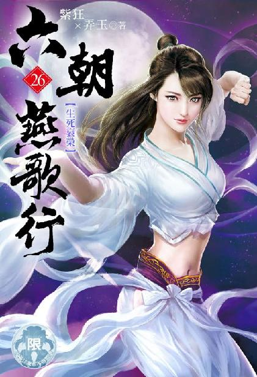

唐国篇
出版日期：2022年 02月 26日
【本集内容简介】
杨玉环赏识黎锦香的谋略，直嚷着要认人做姊妹……
程宗扬看杨玉环和黎锦香演了场戏，直接将周飞唬住，甚至将自己的发妻推给“贵人”，回程的路上杨玉环气得不轻，却也赏识黎锦香的谋略，直嚷着要认人做姊妹……
安乐公主为自己修的墓穴不仅通道长达百丈，开口更是东改西改，最后总共开了六处之多，程宗扬等人怀疑安乐公主并不是在修筑墓穴，更像是在寻找什么东西……
※ ※ ※ ※ ※
长安，兴宁坊。
夜色已深，更兼风雪，此时的凉州武馆，却是分外热闹。
凉州盟此番会盟，盟中大大小小十几个门派齐聚长安，除了丹霞宗这样家底丰厚，门路众多的帮派，或是剑霄门这样新近加入的本地宗门，其余远道而来的门派大都住在武馆内。
大主灶昔明博等不得天亮，便挨个上门邀请宴饮。不多时，周少主得授翊府郎将的事便被宣扬得尽人皆知，馆内的盟友纷纷前来道喜，连武馆外的左彤芝也听到消息，亲自登门。
左彤芝抱拳拱手，笑道：“恭喜周少主，恭喜大主灶。”
昔明博此时乐得合不拢嘴，咧着漏风的嘴巴说道：“同喜！同喜！贵宗的柴宗主呢？”
“柴宗主伉俪去城外见一位朋友，不在宗门，不然必会亲来道贺。”左彤芝目光一扫，“周少主呢？”
“刚才还在呢……”昔明博左右看了一圈，却没见到自家少主的身影，不由纳罕。
此时的周族少主，新授的翊府郎将，正陷入百般纠结之中。
灯火之后，墙下一片阴影中，棕发赤髯的苏沙笑吟吟道：“不成想那位程侯便装来此，竟然是为了给少主送官的？”
周飞淡淡道：“程侯对我钦佩有加，专程请我入翊府为将。我原不想声张，都是手下人按捺不住，让苏掌柜见笑了。”
苏沙方才认出程宗扬的身份，暗中留了心，并未走远，他觑空找到周飞，私下探问。此时从周飞口中得到确信，不禁抚掌大笑，“干得好！我原想着走仇公公的路子，替你讨个出身。却没想到程侯面子如许大，一出手就打通了枢密院的关节。”
苏沙大为满意，“不错！不错！你这回救下仇公公的二公子，看来是真入了那些大人物的眼，左右逢源，平步青云！不过那程侯出手如此大方，里头是不是还有别的缘故？”
如今的周飞早已不是远鄙来的无知小子，心底下很不把这个满身铜臭的商贾放在眼里，操持商贾贱业不说，还是个胡人，只是碍于黎锦香的面子，才不得不敷衍一二，此时只支吾几声，不欲多说。
苏沙看出他的敷衍，心下不由冷笑，自己一手力捧这位周族少主，如今终于名头大振，连那位程侯也见猎心喜，刻意拉拢。不过看他的神情，似乎攀上了高枝，就忘了自己的恩情？但自己有黎锦香在手，哪里怕这匹大弁韩的儿马挣脱笼头，不听使唤？
看他趾高气扬的傲态，少不得还得敲打敲打，免得他自以为翅膀长硬了，给自己脸色看。
“程侯如此厚爱，周少主可千万要小心……”苏沙笑容陡然一变，透出几分阴森，“且莫让那位侯爷突然想起来，少主之前那两次拜访。”
周飞脸色“刷”的白了，方才的志满意得荡然无存。
他在广源行的安排下，曾经两度出手，刺杀程侯，心下一直忐忑，只是程侯提都未提，存了一份侥幸，自以为做得天衣无缝，瞒过了程侯。此时被苏沙当面揭穿，不禁心下一慌，一时间手足失措起来。
用把柄拿捏住周飞，苏沙堆起笑容，上前亲热地拍了拍他的肩，放软口气说道：“看把你吓的，放心吧……”
苏沙笑眯眯道：“锦香是行里养大的，就跟我自家的闺女一样，你既然是我们广源行的女婿，也是行里半个儿子。自家人当然要向着自家人。周少主，你说是不是？”
周飞面容抽搐了一下，露出一个扭曲的笑容。
苏沙含笑不语，勾起手指捋了捋须髯，迈着步子离开。
周飞脸色又垮了下来，不由自主地咬住指尖，飞快地转着眼睛，却想不出半个主意。
“少主啊！你怎么在这里？快快快，客人们可都来了！”昔明博匆匆找来。
此时消息已经传开，道喜的人群往来不断，恭贺声不绝，周飞却眉头不展。落在旁人眼里，倒是颇有几分深沉大度，喜怒不形于色，却不知这位春风得意的周少主，此时正如坐针毡。
周飞越想越是不安，趁着开席，让昔明博招待宾客，自己闷着头赶回院中。
一路上，周飞都犹豫着要不要开口向主子坦白，又担心刚到手的富贵还没来得及享受，就化为云烟。
该死的胡狗！竟然敢要胁自己！
周飞心下恨意一闪，随即消逝无踪。
广源行实力雄厚……不！毕竟对自己不薄，连妻子也是他们搓合的，英雄岂能忘恩负义？除非……
除非他不仁，方能我不义！
越到门前，周飞越是迟疑，在门外徘徊良久，仍拿不定主意。
忽然吱哑一声，房门打开，那位杨公子得意洋洋地出来，一手摇着折扇，一手拥着自家新婚妻子的纤腰，耳鬓厮磨，如胶似漆。
周飞吃了一惊，急忙回头，见院门关好，才松了口气。
妻子像小鸟一样依在那位贵公子臂间，颦眉含羞，玉颊还残留着似乎是欢好过的红晕。
周飞远远站着道了声好，那位杨公子却没有理会他，只顺手合起折扇，挑起少夫人的下巴，笑道：“老程眼力不错啊，找的妞儿够正点！身子香喷喷的，又乖又听话，还是个雏，玩起来别提多过瘾了。”
前院的喧哗笑闹声不住传来，程宗扬一时有些失神。
独柳树下的杀戮余波未平，此时已是张灯结彩，贺声不绝。亲戚或余悲，他人亦已歌，无论那些杀戮如何酷烈，死者如何悲惨，而阉奴们疯狂复仇，彻底打断朝廷脊梁的后果又如何深远，在这里，都如同不存在一样。
他定了定神，没好气地说道：“这么好玩你才玩了半个时辰？你是不是不行啊？”
“放屁！本公子准备带回去慢慢玩，过几天再还你。”
“这可是周族的少夫人，你得问周少主。”
“有你这个主人在，哪里用得着问他们？”
程宗扬看向周飞，“你说呢？”
周飞叉手道：“但凭吩咐！”
“你可想好了，”程宗扬提醒道：“这位杨公子可是个变态。”
杨玉环使劲翻了个白眼。
“杨公子伟岸过人，贱奴体弱，万难承受，”黎锦香含泪央求道：“还求公子饶过奴婢……”
杨玉环眉毛一挑，冷笑道：“敢拒绝本公子？信不信我明天就让人封了你们武馆，把你们夫妻都扔进推事院！”
周飞怀着鬼胎，看到杨公子发怒，不由额头见汗，“公子……”
你们都太能演了吧？程宗扬抬了抬下巴，“劝劝你老婆。”
周飞与妻子走到一旁，嘀咕了一会儿，又连连拱手作揖，黎锦香才终于点头答应下来。
周飞放下心来，上前道：“前边人这会儿太多，院里有处后门，劣奴送主子出去。”
“有后门啊？”杨玉环对黎锦香调笑道：“往后倒是方便找你。”
黎锦香满面羞态，周飞陪着乾笑两声。
众人出了后门，寻到停在街口的车马，周飞亲手将妻子送上车，又不放心地叮嘱了一句，“听话啊。”
车马辚辚驶出兴宁坊，往北边的十六王宅驶去。
周飞松了口气，然后昂首挺胸，返回武馆。虽然有行刺之事，但自己已经迷途知返，问心无愧！
而今晚，自己注定才是凉州盟唯一的主角！
马车上，看着软绵绵偎依在杨玉环怀里的黎锦香，程宗扬不禁又是好气又是好笑，“你们这是干嘛呢？”
黎锦香美目流盼，吃吃笑道：“我方才告诉我那位夫君大人，说杨公子那里好大，插得我好痛，你猜他怎么说的？”
黎锦香轻笑道：“他说，让我忍忍。还告诉我，他刚当上翊府郎将，将来还有机会当上中郎将，能让我妻以夫贵。无非是陪贵人玩几天，有什么要紧的？”
“我肏！”杨玉环骂道：“世上还有这么不要脸的人？”
“识时务者为俊杰，”黎锦香莞尔道：“夫君大人自诩为英雄豪杰，自然是第一等识时务的人物。”
杨玉环还想再骂，程宗扬拦住她，“你开始只说见一面，这会儿非把她带出来？找事呢？”
杨玉环握拳道：“本公主已经决定了！聘请黎妹妹当本公主的军师！”
黎锦香笑道：“贱躯何以承公主厚爱？”
杨玉环握住她的手，“只要帮我对付姓吕的老处女，你就是我的好姊妹！”
程宗扬忍不住道：“你还要人帮手？你不是一只手就能打她两个吗？”
“一条篱笆三个桩，一条好汉三个帮；多个朋友多条路，多个仇人多堵墙；双拳难敌四手，恶虎还怕群狼！”
杨妞儿不愧在街头打混过多年，切口一套一套的，她拍着胸口，激昂慷慨地说道：“本公主跟黎妹妹一见如故，不如这会儿就拜了把子，作了亲姊妹！”
黎锦香笑道：“贱奴岂敢？认公主作主人便是了。”
杨玉环忽然凑过去，像之前程宗扬盯她一样，目光闪闪地盯着黎锦香。
黎锦香笑而不语。
“可以。但不是你。”杨玉环道：“是那个周族的少夫人。”
黎锦香笑道：“公主果然懂她。”
“啵”的一声，杨玉环飞快地在她脸上亲了一记，笑道：“真香。那我们现在可以做姊妹了吧？”
黎锦香看着程宗扬，程宗扬只想学杨妞儿翻个白眼。
“别看我，你们随意。”
黎锦香收起嘻笑，认真向杨玉环福了一礼，“杨姊姊。”
“好妹妹！”杨玉环拉起黎锦香的手，信心满满地宣布道：“本公主的军师在此，我看谁还敢欺负我！”
程宗扬无语半晌，这年头，连杨妞儿都冒充弱势群体了。
什么世道……
“铛，铛，铛……”
大明宫，蓬莱秘阁。一位不速之客夤夜来访，惊动了博陆郡王。
李辅国靠在榻上，不疾不徐地转着铁球。
在他对面，一名高冠文士正襟危坐，神情肃穆地说道：“在下言尽于此，还请大王三思。”
“好大的口气！”李辅国身后一名内侍冷笑道：“你家主子在咸阳作威作福倒也罢了，还让我们王爷三思？真不怕风大闪了舌头！”
“大王明鉴。”文士目不斜视，在席间直起腰，双手齐眉，举起大袖，向李辅国长跪揖礼，“大王若肯割爱，敝上必有所报。”
“怎么着？”李辅国苍老的声音响起，带着一丝狰狞的寒意道：“你家主子连咱家的性命都想要？”
“不敢。只是王爷来日方长，何苦行此下策？”
李辅国仰起头，发出一串夜枭般的笑声，然后笑声一顿，狞声道：“一个三尺高的小兔崽子，居然跟咱家装大！等他老子死了再来跟本王说话！”
李辅国瞋目厉喝一声，“滚！”
那文士面不改色地长身而起，然后不卑不亢地施了一礼，扶剑昂然而出。
那内侍躬身道：“王爷？”
李辅国方才的滔天怒火收敛无形，随意摆了摆手，“那小兔崽子无非是跟他哥子别苗头，设法讨好他家老爷子，让他们两个斗去，不必理会。”
那内侍不言声地躬身退下。
李辅国双眼似睁似闭，掌中铁球的摩擦声在室内回荡。
一屏之隔，鱼玄机像婴儿一样蜷着身，睡在一张朱红色的大网上。她手腕和脚踝缠着绳索，就像一只被束缚在蛛网上的灯蛾。
风雪时断时续，兔苑的小楼内灯火摇曳。安乐抱着一只雪白的兔子，爱抚着它的长绒，小声跟它说着话。
忽然房门推开，一股寒风夹着雪花涌入楼内。
程宗扬立定脚步，“都半夜了，怎么还没睡？”
安乐吃了一惊，期期艾艾地说道：“我，我的屋子被夫人用了……”
杨玉环跟了进来，奇道：“哪儿来的夫人？”
“就是……”
安乐还没说完，楼上有人厉声唤道：“欲奴！”
“哎！”安乐应了一声，连忙放下兔子。
“等等！”杨玉环拉住她，“什么欲奴？”
安乐玉脸一红，嗫嚅着没有开口。
“让你打水呢，又死哪儿去了！”
随着一声娇喝，一名美艳女子扭着腰肢，妖妖娆娆从楼梯上出来，正是那个叫孙寿的低等侍姬。
迎面见到杨玉环，孙寿神情顿时一僵，赶紧换了脸色，垂下手，小心说道：“公主。”
杨玉环斜了她一眼，冷冷道：“大半夜的还不睡，干嘛呢？”
孙寿陪着小心道：“回公主，奴婢正准备洗漱就寝。”
“安乐堂堂公主，是你能使唤的吗？”杨玉环双手手背叉着腰，气贯丹田，痛喝一声，“敢这么欺负人！”
孙寿花容失声，腿一软，屈膝跪下，“奴婢不敢。”
“你刚才叫她什么？”杨玉环寒声道：“说！”
孙寿低着头，不敢作声。
“叫她欲奴。”头顶传来一个声音。
吕雉身着宫装，长裙曳地，她双手交握身前，腰背挺得笔直，带着母仪天下的气度，沿着楼梯抬阶而下，淡然说道：“她如今是我的奴婢，我给她赐了个名字：欲嬛。”
杨玉环凤目腾起怒火，深吸了一口寒气，丰满的胸部像要炸开一样。
程宗扬心头发毛，生怕杨妞儿一怒之下，突然拔出斩马刀，把吕雉给一刀两断，甚至大卸八块。
出乎他的意料，杨玉环反而轻笑了一声，迈着长腿，走到吕雉面前，双手环抱在胸前，毫不客气地望着她。
“她如今给你作了奴婢，你给她改了名字叫做欲嬛。哪天若是本公主给你作了奴婢呢？你会给我赐个什么新名字？”
程宗扬愕然张大嘴巴。
杨妞儿居然没有大打出手？这是转了性子吗？太恐怖了吧！
吕雉仰起脸，毫不示弱地望着杨玉环，“便叫月巴好了，或者月半，你自己挑一个。”
程宗扬听得拳头都硬了。吕美人儿真敢说啊，她不要命了吗？两个人几乎是身贴着身，一旦动手，自己想拦都来不及。
杨玉环嗤笑道：“嘲讽我胖吗？”
咦？杨妞儿竟然还没动手？程宗扬满心狐疑，留心一看，却见黎锦香轻轻勾着杨玉环的衣角。
吕雉道：“本来就胖，难道还不让人说吗？公主殿下再霸道，焉能堵住天下悠悠众人之口？”
杨玉环居高临下地俯视着吕雉，然后轻启朱唇，轻蔑地吐出一句，“你个侏儒。”
吕雉目无余尘的骄傲和高高在上的雍容贵气一下子僵在脸上。
“跟我比，你就是这个！”
杨玉环挑起小拇指，在吕雉面前晃了晃，嘲笑道：“可怜的小矮子，你这辈子都长不高了。”
说罢她对呆在原地的吕雉理都不理，一把扯起安乐，趾高气昂地说道：“跟我来！你个没用的东西，居然被一个小矮子给欺负了！姑姑的脸都被你丢尽了！看我怎么教训你……”
“呜呜呜……”
吕雉扑在床上，双手抱着锦衾，埋着脸，哭得梨花带雨。
程宗扬又是好笑，又是没辙。
这回是吕雉先找的事，却被杨妞儿反唇一击给诛心了。她讽刺杨妞儿霸道，可她也不是个善茬，生性好强，骨子里自有一番不服于人的倔强，即使被杨妞儿的拳脚暴力打得还不了手，也没服过软。唇枪舌剑，从来不落下风，结果被杨妞儿一句“侏儒”给破了防，哭得肝肠寸断。
“好了，好了，别哭了。”程宗扬俯身呵哄道。
“我不就是长得矮了一点点儿吗？她凭什么骂我侏儒！”吕雉满腹委屈，泣声道：“我怎么就侏儒了！”
杨妞儿要是骂些别的也就罢了，汉宫可是有侏儒的。那些侏儒不但矮小，而且长得奇形怪状，作为专心用来戏耍，逗人开心的玩物。吕雉高高在上惯了，突然间被杨玉环扣了个侏儒的名号，可以想像她的心情。
吕处女有羽族血脉，身体轻盈，骨骼纤细，身高……也就一米五多点儿，虽然体格匀称，纤秾合度，但这身高在杨玉环面前确实不够看——单是杨妞儿那极富冲击力的大长腿，就够吕美人儿仰望的了。
更狠的是那句“这辈子都长不高”，简直是挥起斩马刀，把吕雉的心都剁成馅了。果然最伤人的都是实话，连点儿指望都不给。
程宗扬劝解道：“你不是也说她胖了吗？”
吕雉捶床道：“她本来就胖！”
那你本来也不高啊。程宗扬明智地把这句话放在肚子里，没说出来。
吕雉侧过脸，眼泪汪汪地说道：“你是不是也嫌我矮？”
程宗扬果断道：“没有！”
吕雉嘴一扁，又痛哭起来，她把脸埋在被子上，抽咽道：“肯定有！你就是嫌弃我……”
吕雉越哭越是伤心，“她还嘲笑我老处女……你都不肯……唔！”
讲道理是没用了，嫌不嫌弃看行动。程宗扬二话不说，搂起她的纤腰，将她的亵裤，连同里面的霓龙丝衣一把扯了下来，然后扒开她的大腿，低下头，一口含住她的玉户。
吕雉的哭泣声戛然而止，喉中发出低低的惊呼。
她腰臀被搂得拱起，带着胡茬的下巴蹭在玉阜上，滚热的嘴唇包裹着自己娇嫩的性器，那条舌头抿开肉缝，在柔腻的阴唇间舔舐着，粗暴而又温柔，秽亵而又亲昵……
吕雉娇躯发烫，浑身酥软。那条舌头在穴口处打着转挑逗几下，忽然灵巧地卷住花瓣上方的肉珠，用力一吸……
“啊——”吕雉一时间魂飞魄散，蜜穴淫液飞溅。
程宗扬松开嘴巴，挥起手掌，在吕雉丰腻白艳的美臀上“啪啪”拍了两记，喝道：“贱婢！把屁股扒开，主子要肏你的屁眼儿！”
吕雉的哭泣被主人粗暴地举动压制住，她乖乖抱住臀肉，朝两边剥开，将自己的后庭绽露出来。紧接着那根火热的阳具挺来，在自己湿腻的嫩穴间挤弄了几下，然后顶住肛洞，粗大的棒身如同火龙一样，粗鲁地贯入体内。
“啊！啊！”
吕雉屈膝伏在榻上，双手攀着床栏，被主人凶猛的肏弄干得呼吸散乱，娇喘不绝。
程宗扬凶猛地挺动下体，小腹撞在美妇赤裸的臀肉上，干得“啪啪”作响，一边喝斥道：“让你哭！”
“没完没了是吧？还哭不哭了！”
身下的美妇被干得花枝乱颤，颤声道：“不，不哭了……”
“以后再哭，只能被主子干哭，听到没有！”
“听，听到了……”
“要叫老爷！”
“是，老爷……”吕雉吃力娇喘道。
耳边传来一声低笑，忽然身体一轻，被主人拦腰抱起。
吕雉“啊”的叫了一声，粉臀猛然间坠下，却是主人双膝支在床上，上身后仰，用了个铁板桥的姿势，将她顶了起来。
粗大而坚硬的阳具杵进肛内，整个身体的重量几乎都落在上面。吕雉不由自主地收紧肛洞，接着肛中粗大的肉棒一拧，主人一手握着她的腰身，一手搂住她的双膝，将她整个人旋转过来，面对着主人。
深入臀内的阳具搅动着肠道，收紧的肛蕾仿佛被肉棒钻开，突如其来的冲撞感，使她几乎失禁。吕雉鼻中发出“唔”的一声娇呻，然后便看到主人满是坏笑的面孔。
吕雉面红耳赤，握住粉拳往他胸前捶去。
程宗扬大笑着身体一抬，将她合身压在榻上，“我的小鸟儿生得这么美，当然要正面干才爽。”
吕雉一时心醉，仿佛身体都飘了起来。
心迷意乱间，只听主人说道：“来，亲一个！”
吕雉羞赧地闭上眼睛，乖乖张开红唇。
半晌没有感受到他的唇舌，吕雉疑惑地睁开眼睛，却见主人正满脸坏笑地看着自己，“主子要亲你的奶头，你张嘴干嘛？”
吕雉一时大羞，正待掩面，又被他捉住双手，放到腹下。
“把你的小嫩穴剥开，让主子观赏一下。”
吕雉红着脸，羞昵地说道：“不要……”
“一个贱婢，还敢跟主子说不？”程宗扬板起脸，“还当你是娘娘呢？在床上你就是供主子享乐的淫奴！让你浪给主人看，你就得浪！”
男人凶巴巴的口气中透出一丝委屈，“我在外面打生打死，好不容易回来轻松一下，还不让我爽一会儿？”
吕雉柔声道：“你用力干好了。”
“不干！我生气了！”
吕雉咬了咬唇，“你来摸我的奶子好么？”
程宗扬头一扭，“不摸！没兴趣！”
吕雉软语道：“不要生气了好吗？”
“哼！”
“我下面有点痛，”吕雉小声道：“被你胡子扎的……你看。”
程宗扬扭过头，只见身下的美妇乖乖分开娇腻的嫩穴，双手玉指按着玉户边缘，将柔艳而羞媚的处子性器整个剥开，绽露出里面湿艳的蜜肉，还有那只水汪汪的穴口。
程宗扬转怒为喜，“我就知道，雉奴最乖了！知道怎么让主子开心。”
吕雉娇靥泪痕未乾，她咬了咬唇瓣，满面羞态地娇声道：“主子，奴婢的浪穴好看么？”
程宗扬大笑道：“再浪一点！”
“主子看，奴婢的淫穴又红又嫩，还是娇滴滴的处子，只等着主子的大肉棒戳到奴婢的小肉洞里，给奴婢开苞……”
程宗扬笑道：“没想到啊，雉奴浪起来也惟妙惟肖的，在哪儿学的？”
吕雉不想说，在主人逼迫下才道：“奴婢那时候气忿不过，让那几个受宠的妃嫔演示过……”
程宗扬想起汉宫那条暗无天日的永巷。她身为正宫，却被天子视若无物，反而被几个妃子骑到头上，背地里嘲笑奚落，以吕雉的性子，一旦手握众妃生死，不狠狠报复回去才怪。
“看来你学的不少嘛。”程宗扬道：“来，这会儿给主子演一个。”
吕雉面露难色。
“我来说你来做好了，”程宗扬笑道：“请娘娘高抬贵手，一边被主子肏屁眼儿，一边拿你的处女屄自慰给主子看。”
吕雉雪白的胸乳起伏片刻，然后想到了什么，唇角露出一丝笑意，娇媚地说道：“是，主子。”
她左手食中二指撑开淫穴，右手中指翘起，探入穴口，在红腻如脂的蜜肉间挑弄着，一边娇声道：“可惜奴婢腿不够长，不然就能盘在主子腰间，一边被主子肏，一边自渎给主子看。”
程宗扬畅想了一下那幅香艳的画面，然后省悟过来，一时间啼笑皆非。
吕美人儿自曝己短，是故意给自己一个念想，好拖杨妞儿下水。说不定自己存在心里，将来跟杨妞儿欢好时，也让她这么玩。
虽然知道是吕雉的心计，但想像一下此时身下如果换成丰姿秾艳，风情万种的杨贵妃，程宗扬不由欲火高炽，勃起如铁。
“贱婢，屁眼儿夹紧！”
“没用的东西！”杨玉环气得捶桌，喝斥道：“还有你！”
安乐满面羞惭，旁边的杨艳也羞愧地低下头。
“你们两个大唐贵眷，金枝玉叶！竟然被一个汉国的死女人骑到头上，作威作福！”杨玉环痛心疾首，“本公主的脸面都被你们丢尽了！”
“姑姑息怒……”
“息怒？难道还要我夸你们俩？我给你们俩找条生路，免得你们死得不明不白。你们倒好，一眨眼的工夫，连奴婢的名字都起好了，一个滟穴，一个……”
杨玉环“呯”的一拳砸在桌上，“气死我了！”
两女齐齐噤声。
“你们两个给我老实交待——”杨玉环警告道：“不许夸张粉饰！更不许故意吹嘘！”
她凑到两女面前，声音压得低低的，“他有多大？”
安乐和杨艳愕然片刻，才反应过来姑姑问的什么，顿时都红了脸。
杨艳含羞举起双手，有些迟疑该怎么比大小。旁边的安乐毫不犹豫地捋起衣袖，抬起小臂往姑姑面前一伸。
杨玉环倒噎了一口气，失声道：“我肏！”
杨玉环一手按住心口，平复了一下心情，好不容易才回过神来，“死丫头！你吓唬谁呢！”
安乐嘟起嘴，“真的，真有这么大。”
“不可能！”杨玉环拍案道：“他要有这么大，我当场把它给吃了！”
安乐委屈地不敢作声，杨艳在旁道：“一开始没这么大，然后就……”
“一开始有多大？”
杨艳低下头，不好意思地说道：“能……能含在嘴巴里。”
杨玉环带着压抑不住的好奇，小声道：“你给他口了？”
杨艳点了点头。
“什么味道的？”杨玉环美目闪闪发亮，“苦不苦？”
“不苦。”安乐接口道：“是甜的。”
杨玉环道：“你也尝过了？”
“嗯。”
杨玉环板起俏脸，“真恶心！”
“不恶心。”安乐一脸认真地说道：“甜丝丝的。”
杨玉环狐疑地看着她，“想骗我？哼哼，我看着你长大的，还不知道你？你个小笨蛋！”
安乐嘟起嘴巴，杨艳道：“是有一点点甜……”
“瞎说！难道他属蜜蜂，尿蜜糖的？”杨玉环撇了撇嘴，鄙夷地说道：“还甜丝丝呢，骗人！肯定有尿味！”
“没有。”安乐眼睛睁得圆圆的，“很乾净的。”
“哼哼！”杨玉环一脸的不信，心里却不禁闪过那个死女人扑上去张开嘴巴的一幕……
难不成是什么宝贝？还抢着吃？下流！
杨玉环心下啐了一口，不觉身上一阵燥热，她将衣襟解开少许，用手掌扇着风，问道：“然后呢？”
“嗯？”
杨玉环恨铁不成钢地说道：“后面呢？他用的什么姿势？你什么感觉？是痛是痒，还是酸甜苦辣咸，往细里说。”
“嗯……”安乐想了想，“好多，我都快晕了。”
“晕？”杨玉环完全没想到会是这个答案，“你是第一次，不应该疼得要死要活吗？怎么会晕？”
“是有一点点痛……”安乐道：“可他花样好多，一会儿上，一会儿下的，就像坐船一样，人家一会儿就晕了。”
“哈，他还挺会玩啊？”杨玉环冷笑一声，然后欺近少许，眨着水汪汪的大眼睛道：“真的只有一点点痛？”
“嗯！”安乐用力点头。
“不许骗我！”
“真的。”
“不可能啊，”杨玉环玉指摸着下巴，小声嘀咕道：“这跟书上说的不一样啊？”
安乐和杨艳很想问问，姑姑学习的时候都看的什么书，但没敢开口。
“你怎么不说话？”杨玉环嘀咕完，扭过脸道：“让你给姑姑当眼线，通风报信呢，你个叛徒！”
“我……不知道姑姑要问哪些……”杨艳满脸窘迫，羞赧地咬住唇瓣。
“嫂嫂趴在地上，被他从后面插的。”安乐道：“我看到了。”
杨艳羞道：“你——”
“怎么回事？”杨玉环道：“他跟你嫂嫂做的时候，你还在旁边看着？”
“嗯。”安乐点了点头，“他插得好用力，嫂嫂一直在叫。”
“一直在叫？”杨玉环不解地问道：“是因为痛的吗？”
安乐道：“我看嫂嫂好像很舒服的样子。嫂嫂的屁股还流血了。”
“才没有！”杨艳一阵羞急，“他干萧娘娘的时候才用力呢，又粗鲁，又野蛮，娘娘都被他肏得哭出声了。安乐，你怎么不说？”
“停！停！”杨玉环听得头大，愕然指着两女道：“你，安乐，还有安乐的娘——你们在一起？”
两女红着脸低头不语。
“荒淫！无耻！下流！”
“太不要脸了！”
“简直就是禽兽！”
“不对！是禽兽不如！”
杨玉环对这种背德乱伦的行径大为光火，痛斥道：“不知道的还以为他长了几个鸡巴呢！”
杨玉环脸红得跟苹果一样，大发了一通脾气，最后到底有些放心不下，犹豫道：“呃……那个……”
“他就长了一个对吧？”
卧房内，低垂的床帷终于停止摇动，正被人担心身怀奇具的程侯爷松开手，身下那具白腻的女体已经瘫软如泥，浑圆的双乳随着娇喘起伏不定，朦胧的双眸残留着高潮过后的满足和羞态，愈发娇艳。
程宗扬俯下身，在吕美人儿腮旁亲了一口，然后扯过锦被给她盖上。
分开床帷，两名艳婢早已在外面跪候多时。孙寿狐媚地张开红唇，用香舌清理主人下身的淫液，成光则拿来浸过热水的巾帕，给主人抹拭身体。
看到成光手中的毛巾，程宗扬心头一紧，方才的那番欢愉不由烟销云散。
“你们紫妈妈还没有消息吗？”
成光摇头道：“还没有。”
死丫头这都几天了，怎么还没有消息？程宗扬心里发愁，一边左右看了看，“兰奴呢？”
“娘娘说家里无人照应，打发兰奴带着萧氏，去赵氏跟前伺候。”
她们这点小心思，自己也能看得出来。孙寿和成光天然跟吕雉亲近。尹馥兰在这个小圈子之外，只能讨好蛇奴等人，如今蛇奴不在，就成了被排斥的对象。至于带上萧氏……多半是萧氏的身份与吕雉相冲突，让她有种危机感。
奴婢们的勾心斗角，程宗扬也懒得操心，女人们争宠，无非是便宜了自己。
他闭上眼睛，感受了一下丹田的状况，然后打发走两女，自己去了隔壁的静室，盘膝而坐，凝神敛息，专注化解生死根中那股森冷的寒意。
天色微亮，程宗扬睁开双目，缓缓吐了口浊气。
折腾一夜，只能说略有进展，但还远远不够。
观海那具尸傀实在太恶心了。娘的，等抓到观海那个死光头，非把他脑门上也开个眼儿，作成三眼尸傀！
拉开房门，和衣靠在铜炉边的安乐顿时惊醒，期期艾艾地说道：“你，你起来了……”
程宗扬歪着头道：“怎么又是你伺候？她们又欺负了你？”
“不是的……”安乐鼓足勇气，“你让我说的，我都告诉姑姑了。”
“就知道她忍不住打听！”程宗扬抚掌笑道：“你怎么说的？”
“我告诉姑姑，你很大，一点都不痛，还很好闻，甜甜的……”
杨妞儿一贯的嘴响心怯，平时四处撩火，一到见真章的时候就怕得不行，百般耍赖。我就不信钓不上你这只好奇心旺盛的小猫！
程宗扬大笑起来，“干得好！我要奖励你！”
说着他一把抱起安乐，回到房内。
隔着薄薄的纸扉，少女的吃痛声，低叫声，讨饶声，不断传来。孙寿与成光面色潮红，目中露出羡慕和期盼的眼神。直到房内传来主人召唤，两女才松了口气，彼此对视一眼，然后扶了扶鬓发，娉婷入内。
铅灰色的云幕低垂下来，掩住了清晨的晓色，雪花不时飘落。
大明宫外，多了一队风尘仆仆的甲士，他们似乎是远道而来，衣甲上沾的泥水没来得及清理，就匆忙赶到宫外驻守，此时疲惫间带着压抑不住的兴奋。
毕竟是帝国中枢，京畿所在，即使前日宦官们与朝中的大臣彼此屠杀，血洗宫禁，仍不减风采。这些神策军很多都是第一次踏入大唐的京城，亲眼目睹长安城的辉煌与华丽，不由目眩神驰，更与有荣焉，胸膛都挺得比平常高了几分。
程宗扬放下车帘，“这帮太监连日来不停调兵，已经稳住局势了。”
杨玉环道：“他们刚在独柳树下大开杀戒，你就入宫拜会仇士良，小心别人说你阿附内臣。”
“没搞错吧？我是汉国使者，阿附宦官这种事，怎么也轮不到我。况且我是去拜见太皇太后，跟宦官有什么关系？”
程宗扬笑言以对。晨间他一时兴起，拉着安乐媟戏，结果那个香娇玉嫩的小美女纤体如酥，刚开苞的嫩穴更是柔滑软腻，妙态横生，使得他流连忘返，欲罢不能。安乐弱体难支，后来又召了奴婢助兴，若不是敖润赶来报信，自己只怕能折腾到午时。
敖润是从宣平坊赶来，今日一早，天还未亮，新任的枢密使仇士良便派人到坊中拜会，面见贾文和时道出来意，却是私下有事相求——恳请程侯以汉国太后问候安好的名义，谒见太皇太后。
仇士良的心思倒也不难猜，他刚当上枢密使，结果头一次上朝，就大大丢了回面子。若是下次上朝，朝堂上还是小猫三两只，他这个枢密使也不用做了。
为了保住地位，仇士良也是想尽了辙，如今太皇太后还宫，程侯若是作为汉使前来拜见，意味着风波已过，对内好安定本国的人心，对外也好打消诸国的疑虑。说白了，就是借此粉饰太平。
仇士良这点儿面子还是要给的，拜见太皇太后也是说得过去，程宗扬当即答应下来。
“你是想见小白吧？”杨玉环带着一丝酸溜溜的口气道：“才几天不见，就这么牵肠挂肚的？”
“你这么说就不公平了，”程宗扬摆事实讲道理，“人家小白可是把身子都给我了，我牵肠挂肚难道不应该吗？哪儿像你，光是嘴巴上说，连点儿彩头都没有。”
“哎呦，你想要什么彩头？乾脆把本公主包成个大红包，送你开包好了。”
“一言为定？”
杨玉环啐了一口，“想得美。”
“喂，”过了一会儿，杨玉环提醒道：“等你入宫，见了太皇太后，最好别在她面前提高阳。”
“为什么？”
“太皇太后以前很宠高阳。高阳的事惹得满城风言风语，让她很不高兴。再后来高阳失踪，她大发了一通脾气，从此宫里没人敢在她面前再提高阳。”
“这样啊。”程宗扬有心拜见太皇太后时，顺便打听一下高阳的往事，闻言只好放弃。
紫宸殿外，仇士良满面春风，显然心情大好。
程宗扬笑道：“仇公，令郎可好？”
“托侯爷的福，犬子的病情已经稳住了。”仇士良笑逐颜开，“多亏了信永方丈连夜作法，诵经祈福，后半夜总算退了烧，今早醒来，胃口也开了。”
“令郎吉人天相，仇公后福可期。”
仇士良大笑道：“托福！托福！”说着他作了一揖，“这回的事可要多谢程侯。”
“仇公客气了。”
仇士良感叹道：“侯爷也知道，朝廷里奸臣结党营私，图谋不轨，虽然昨日杀了一批作恶多端的乱党头上，可还有些个奸恶之徒在外头谣言不绝，搞得人心惶惶。程侯能捐弃前嫌，前来拜见太皇太后，这是我大唐的体面！也是侯爷的胸怀！”
仇士良狠狠拍了一通马屁，程宗扬也投桃报李，大赞仇士良行事稳妥，处置果断，毅然出动天策府，平定长安乱事，实乃治国良臣。
双方一通不着边际的互吹，皆大欢喜，仇士良叫来小太监，为程侯引路。
太皇太后所在的仙居殿内，程宗扬奉上礼物，“这是外臣来时，敝国太后亲手挑选的礼物，为太皇太后贺。”
郭氏出身高贵，性子也极为刚烈。宪宗皇帝忌惮郭家的势力，一直未立郭氏为皇后。等宪宗驾崩，郭氏由贵妃一跃成为太后，又晋位太皇太后，穆宗、敬宗和当今李昂，都是她的亲生子孙，地位尊崇。如今已过六旬，虽然能看出年轻时极美，但毕竟岁月不饶人，已显老态。
“贵使请起。霓裳，给程侯拿张凳子来。”
白霓裳身着宫装，打扮成宫人的模样，随侍左右。她几天不见情郎，本来满心幽怨，但看到他不避嫌疑，跑来见自己，怨念顿消，喜滋滋去拿凳子，顺便给了杨玉环一个白眼。
“白小痴。”杨玉环追上去，拉着白霓裳在角落里小声嘀咕起来。
郭氏笑眯眯打量着程宗扬，神情间颇为满意。
程宗扬心下暗自嘀咕，这种丈母娘相女婿的感觉是个什么情况？难道她也听说杨玉环想嫁人了？
郭氏道：“贵国太后寿庚几何？有几个子嗣？”
“太后尚不及四旬，陛下龙体不豫，年前不幸驾崩。”
程宗扬没提刘骜并非吕雉亲生，毕竟不是什么长脸的事。
“也是个苦命的……”郭氏感慨一声，“那继任的呢？还是她的子嗣吗？”
“回太皇太后，是外藩入继。”
“唉，不是亲生的，本就隔了一层，何况是外藩入继？往后怕是为难。”
郭氏打开话匣子，絮絮说起往事。她有两个亲生儿子，一个是穆宗皇帝，一个是绛王李悟。敬宗、李昂和江王李炎都是穆宗之子，陈王李成美更低一辈，是她的重孙子，如今连玄孙都有，可以说子孙满堂。但提到子女，仍不免耿耿。
“若是遇上不省心，更是折寿。老身当日有个闺女，虽不是亲生的，但自幼养在膝下，对她爱如己出。可她恃宠而骄，在外面闹得不成样，行事更是荒唐，年纪轻轻，就张罗着给自己修墓，结果墓还没修好，人就没了……”
杨玉环拉着白霓裳说了会儿悄悄话，回来又跟郭氏撒了会儿娇。
这边程宗扬也尽过宾客之仪，于是起身告辞。
郭氏请他代问汉国太后安好，叮嘱白霓裳相送。
“我已经跟小白说好了，”杨玉环道：“再守两日，便让人替换她。”
白霓裳比出手指，“最多两天！”
“行行行！就再辛苦你两天。”
自仙居殿向南，从紫宸殿西的光顺门出来，便是命妇院。远远看到一群贵妇正在等候谒见。这些都是有诰命的贵戚女眷，得知太皇太后还宫，前来请安，其中还有几个高鼻深目的胡妇，穿着唐制的命妇服，此时纷纷望了过来。
白霓裳满心难舍，但此处已是中朝，只能停下脚步，恋恋不舍地说道：“侯爷慢走。”
说着她举目望了过来，目光火辣辣的，仿佛有千言万语。
程宗扬怦然心动，几天不见，白仙子整个人就像蜜糖一样，又甜又美，让人禁不住想拥在怀里，仔细呵护。
可惜周围人多眼杂，想搂搂亲亲都不行。程宗扬笑着还礼作别，一边压低声音道：“最多两天，等你回来，到时我们干个通宵。”
白霓裳玉颊腾的一下，像火烧一样红了起来。
出了昭庆门，杨玉环揶揄道：“侯爷好厉害，还通宵呢？往后长安城的牛都不用杀了，让你一口气吹死得了。”
程宗扬笑眯眯道：“要不你试试？”
“谁怕谁啊？”
“说得嘴响，你刚才干嘛板起脸，装作跟我不熟？”
“那帮婆娘最喜欢搬弄是非，背后指不定怎么说我呢。”杨玉环没好气地说道：“那帮死太监还不够狠，换作是我，早把她们全给杀了！”
“幸亏你没当皇帝，不然天下头号暴君就是你。”
“我要是当皇帝，立马把你阉了，让你当朕的贴身大太监。”
“贴身？怎么个贴身法？”程宗扬道：“人在人上，肉在肉中那种的？”
“呸！”
风雪渐起，高力士等人在巍峨高耸的栖凤阁下等候，见主子出来，连忙上前张开伞盖。
登上马车，程宗扬神情不由凝重起来。
“喂，干嘛苦着脸？”
“你知道高阳给她自己修的坟吗？”
杨玉环想了一会儿，毕竟那时候年龄尚小，所知不多，“怎么了？”
“太皇太后方才说，她有个女儿不听话，不肯入皇家陵园，反而在渭水边上买了田地，给自己修建坟墓。虽然没提名字，但我猜是高阳。”程宗扬道：“按道理说，无论宗室、大臣，都以陪葬皇陵为荣，高阳为什么这么做？”
“你怀疑墓葬有异，想去打探虚实？”杨玉环道：“可她即便建好坟墓，也未必用得上，这么多年说不定早就废弃了。”
“不是。提到渭水边上的田地，我倒想起件事。”程宗扬道：“我在太泉找到岳鸟人给女儿留下的遗物，一份给岳霜的，就是渭水边上的田契。另一份给岳霏的，是寄当的珠宝。”
杨玉环来了兴趣，“东西在哪儿呢？”
“应该带来的，但带的东西太多，一时不好翻。”
“不是吧？这么关紧东西，你就没个专门放置的地方？”
程宗扬想了半晌，忽然一击掌，“雪雪！”
自己虽然对那些琐碎物品没太在意，但死丫头肯定不会乱丢，岳鸟人留下的田契和当票，八成都在小贱狗肚子里藏着。
“干！”
小贱狗跑得连个影子都找不到，这会儿想拿也拿不出来。
“高力士，”杨玉环道：“知道高阳当年修的坟在哪儿吗？”
高力士坐在车前，回道：“奴才刚打听到的，高阳公主府里有个老人，如今上了年纪，在永兴坊的善果寺出家。”
杨玉环道：“去永兴坊！”
永兴坊位于皇城东侧，坊内的善果寺只是一处小庙，寺里三五个僧人都是没有混出名堂的底层宦官，年纪老迈，被宫里打发出来，借此栖身。
“公主那处坟地啊……”
提及此事，那位曾经在高阳府里伺候过的老太监，如今眉毛已白的老僧倒是知道，“就在渭水南边，离灞水没多远。当年公主买了地，说要修坟。可公主那性子，刚开始修，就三天两头的改主意，东改西改的，一直没有修完。后来公主出事，坟就停了。”
程宗扬道：“修到什么地步了？”
“光墓道就有上百丈……”
“等等！上百丈？”程宗扬道：“哪儿有这么深的墓道？”
“修坟呢，又不是打井。”杨玉环道：“谁家墓道是直着往下的？”
“那也太长了，一般的皇陵也没这么长吧？”
“不是直的，”老僧道：“光开口就改了好几处，公主说，要定个吉位。”
程宗扬心头疑云丛生，墓道有好几处开口？这听着怎么都不像是修坟，倒像是挖矿，东边挖挖，西边挖挖。高阳这是拿修坟当幌子，另有目的？
程宗扬又问了几句，见老僧知道的也不多，于是道：“还有件事情想请教大师。”
老僧陪着小心道：“侯爷尽管吩咐。”
“高阳公主当年出了什么事？”
“这个……”老僧谦卑地笑了笑，露出光秃秃的牙床，“上头的事，老僧也说不清。”
“哗啦”，程宗扬将一把钱铢放在案上，“大师再想想。”
老僧抿了抿嘴，小心拈起一枚银铢，将剩下的推了回来，陪笑道：“不是老僧不肯说，实在是不知内情，不敢乱说。”
老僧将那枚银铢仔细掖到怀里，“小的只知道，有天早上起来，公主突然没了。不瞒两位，公主以前夜里也偷偷出去过，奴才们没敢声张，想着先把事情瞒过去，等公主回来。可等了一天，也不见踪影，才慌了手脚。”
“眼看事情压不住，只好把事情报上去，宫里派人来看过，也没寻到蛛丝马迹。再往后，便对外报了身故，把公主昔日的衣饰放在棺里下葬。”
杨玉环道：“坟还没修完，葬在哪儿了？”
“那坟虽然没修完，但地方是尽够了，换作别处，更来不及，便在里头开了间墓室，安葬了公主的棺木。”
程宗扬将钱铢全数推了过去，“墓室的方位，大师还有印象吗？”
离开善果寺，天色已经黯淡。程宗扬登上马车，揉了揉肚子，这才想起自己竟然忘了吃午饭。
“没想到说了这么久。”
“还不是你问东问西的，耽误时间。”
“是你非要现买纸笔，当场绘图耽误的吧？”
“光凭嘴说，哪里有画出来的详细？”杨玉环晃了晃纸张，“走，本公主带你去邻坊吃羊羹！高力士，你去把黎妹妹接来！”
“干嘛再折腾人家？”
“朕的军师，当然负责动脑子。”
“你呢？”
“我负责吃！”
宣平坊。
一名气宇轩昂的高冠文士扶剑踏入坊中，宽大的衣袖几乎拂到地面。
程宅门外，几名宋国军士拦住去路，“此地乃程侯私宅，闲人勿入。”
那文士揖手道：“在下史举，正要拜见舞阳程侯。”
童贯摆了摆手，“侯爷不在，改天再来吧。”
那文士取出一封信柬，“敝上书信在此，还请足下代为通传。”
童贯上下打量了他几眼，这人衣冠古朴，不类唐宋，倒是跟徐仙长的随从有些相似。观其气度，不像寻常的仆从，直接打发走，怕是不合适。
他接过信柬，“等着。”
童贯拿着信柬入内禀报，不多时出来道：“史先生是吧？贾先生有请。”
永兴坊北邻的永昌坊，经历了前几日骚乱的之后，几家有字号的食肆已经重新开张，只是宾客不多，铺面冷清。
“绿蚁新醅酒，红泥小火炉。晚来天欲雪，能饮一杯无？”
杨玉环拿起玉盏，对着窗外漫天的风雪一举，然后仰首饮乾。
临窗的几案旁放着一只红泥火炉，铜釜内的羊羹已经滚沸，奶白色的浓汤不住翻滚。
程宗扬拿着酒盏，望着对面一处茶肆，久久没有举杯。
杨玉环凑过来，“看什么呢？”
“那处茶肆……”程宗扬若有所思地说道：“就是王涯被抓的地方吧。”
堂堂宰相，却在大庭广众之下，身着朝服被太监锁拿入狱，屈打成招，写下自认谋反的供辩，最后在独柳树下拦腰一刀，分尸两段，甚至累及子孙。这样的下场未免太过凄惨。
“主庸臣弱，虽其状可哀，其情可悯，但到底不过是无能之辈。而且他当日力主榷茶，百姓最恨的就是他，被杀的众臣，人人称冤，唯独他，尽皆叫好。”杨玉环道：“可惜了。他若只是个文学之士，于国于民说不定还有益些。”
程宗扬摇了摇头。无论忠奸正邪，死后都无声无息。独柳树下血迹未乾，街上的生意又重新热闹起来。亲戚或余悲，他人亦已歌，世事如此。
程宗扬夹起一块汁水淋漓的羊肉，放到黎锦香碗中，“赶紧来吃，一会儿凉了。”
杨玉环放下玉盏，“我也要！”
程宗扬捞起一块肥羊，蘸了酱汁，举着筷子递过去，“张嘴。”
“啊！”杨玉环张开嘴巴。
程宗扬将羊肉在她丰润的红唇上蹭了蹭，然后丢到自己口中，一口吞下。
“你！”杨玉环握起粉拳，捶在他肚子上，“给我吐出来！”
程宗扬笑道：“好了，好了，再喂你一块。”
程宗扬重新捞了块羊肉，送到杨玉环嘴边。杨玉环张口去接，却差了少许，她仰起玉颈向前，却被程宗扬一个偷袭，飞快地亲了一口。
羊肉没吃到，反而被亲了嘴巴，杨玉环大怒，“无耻！赔我羊肉！”
两人闹成一团，旁边的黎锦香放下纸张，颦眉道：“这墓地单是出口就有六处，而且方位不一，高阳公主再任性，也不至于任性到荒唐无稽的地步。”
“对吧，”程宗扬道：“高阳这坟肯定有问题！”
“那你打算怎么样？”杨玉环道：“把坟挖了？”
“反正是空坟，挖了也没什么吧？”
“空的也不能挖。高阳再怎么说也是公主，即便是衣冠冢，也不能妄动一草一木。”
黎锦香道：“我虽然不懂风水堪舆之术，但只看地势，此墓绝非佳处。尤其是墓地周围都是丘陵，唯独墓穴是在凹处，地势低洼。还有墓道的朝向，与其说是修坟，更像在找什么东西。”
程宗扬心头一动，找什么东西？探宝吗？
黎锦香道：“那老僧有没有提到，修坟时挖出来什么东西？”
程宗扬回忆道：“那老僧说，一开始还好，挖到下面都是乱石，越往下越难挖，不得不专门找了块地，用来堆石头。”
杨玉环道：“看来她什么都没挖到，就失踪了。”
黎锦香道：“也许她挖到东西，才失踪了呢？”
杨玉环与程宗扬对视一眼，目光微微发亮。
净街的鼓声已经敲过半个时辰，街上行人断绝，杨玉环毫不在意，直到酒足饭饱，高力士叫里正打开坊门，亲自驾车，驶出永昌坊。
杨玉环摩拳擦掌，“今晚养足精神，明天我们就去挖高阳的坟！”
“你不是说一草一木都不能动吗？”
“我跟她是平辈，妹妹挖姊姊的坟，天经地义！”
程宗扬张臂护住黎锦香，“离她远点儿，免得她被雷劈连累到你。”
杨玉环正要反唇相讥，忽然玉容变色，她一把掀开车帘，将镶着玻璃的车窗“呯”的推开。
一股寒风夹着雪花涌入车厢，紧接着人影一闪，一个白衣女子飞鸟般投入车内，尚未落地，便喷出一口鲜血。
杨玉环扬起衣袖，一条雪白的罗帕飞出，将她喷出的鲜血尽数接下，然后一把抄起斩马刀，唇间打了个唿哨。
马车立刻加快速度，驶过街巷。
片刻后，几道人影掠上坊墙，为首一人脸色惨白，身披貂裘，两眼鬼火般四下一望，厉声喝道：“停车！”
那辆没有旗号的马车行驶不停，车前的驭手佝偻着身体，戴着一顶掩耳的皮帽，似乎没有听见。
为首那人纵身一跃，乌云般横掠过来，然后身形一沉，双足往驭马的背上重重踏去。
这记千斤坠势大招沉，刚一踏中，两匹驭马便被压得嘶鸣，难以举步。
那人冷笑一声，力贯双足，正待将驭马脊骨踏碎，车前的驭手忽然扬鞭，劈头盖脸地抽了过来，一边尖声道：“好你个刘三！好端端的又欺负人家！”
那人浑身汗毛直竖，失声道：“高力士？！妈逼的你怎么在这儿？”
“出来遛马的！”高力士捏了个兰花指，遥遥戳着他道：“不行啊？”
“天都黑了你遛个鸡巴马？”那人懒得跟他饶舌，“刚才有人跑过来，你见着没有？”
“没有！”
“识相点儿！”那人压低声音，“上头的差事，要命的！懂？”
“没有就是没有！”
那人脸一板，“给脸不要脸是吧？非让我搜是吧？”
“搜吧。”高力士一脸无所谓地说道：“随便搜。要不要借给你俩胆子？”
那人小心起来，“公主在里头？”
“你猜。”
“给你脸了是吧？”那人有些发急地说道：“别耽误我办事！”
高力士扬声道：“公主殿下，内侍省的刘光琦那阉狗说你耽误他……”
“别别别！”刘光琦连忙打断他，然后堆起笑脸，“公主殿下，奴才给公主请安了。”
车内声息全无，刘光琦脸色一沉，“诈我？空车是吧？”
高力士侧过耳朵，“你说啥？”
刘光琦喝道：“是不是空车！”
高力士回头道：“公主，刘光琦那阉狗要搜咱们的车……”
刘光琦连忙跪下，连声辩解道：“小的不敢冒犯公主！实在是有差事在身，偏生这厮不好好说话，求公主殿下给奴才作主啊！”
“你再大点儿声。”高力士道：“公主殿下刚睡着，你赶紧把她吵醒。”
刘光琦被高力士这狗仗人势的混帐东西折腾得倒噎气，“你娘……”
马车驶过的一株古槐后面，背着斩马刀的杨玉环侧耳仔细倾听。
“走远了。”她回过头，奇道：“谁这么厉害，能打伤你？”
潘金莲唇上血迹宛然，脸色愈发雪白。
黎锦香仔细看了一眼，“先找个静处。”
程宗扬望了望周围，此时从永昌坊出来，刚过来庭坊，十六王宅在东北。但方才那帮内侍追着高力士的马车一道入坊，暂时是去不成了。
往东是出城的通化门，往南则是……干！又是大宁坊！
程宗扬硬着头皮道：“跟我来。”
此时坊门已闭，四人潜入坊内，在巷中左右转了片刻，然后跃过一道高墙，掠入一丛竹林。
杨玉环挑了挑眉，“好大的血腥气。”
程宗扬低声说道：“这是浑府的后花园，府里的人都死光了，刚收拾过。虽然不是什么好地方，但还算安全。”
杨玉环道：“你路还挺熟？”
“废话，”程宗扬没好气地说道：“大宁坊这破地方，我都来多少趟了，一来准没好事。”
“那你还非要来？”
“这不是上清观就在这儿吗？难道还要绕到别的坊里去？”
两人吵闹间，潘金莲盘膝坐下，从怀中取出一只瓷瓶，将一颗黄澄澄的药丸含入口中，敛息入定。
程宗扬此时才注意到，她颈后印着一记紫黑的掌印，虽然大半被衣领遮住，但露出半截指痕像墨汁一样印在雪白的肌肤上，触目惊心。
三人没有作声，各自坐在一角，静待潘金莲驱毒疗伤。
竹叶在寒风间沙沙轻响，雪花落在地上，随即消融。
随着潘金莲的吐纳，颈后的掌痕越来越淡，肌肤恢复润泽。
片刻后她轻轻吐了口气，啐出齿间的药丸。原本澄黄的药丸已经变得紫黑，散发出铁锈般的气味。
杨玉环迫不及待地说道：“怎么回事？”
潘金莲将浸满毒素的药丸纳入瓷瓶收好，然后看了黎锦香一眼，“此事说来话长。”
“哦，这是黎妹妹，你们认识吧？”
黎锦香笑道：“在太泉见过。”
“萍水相逢，不意有缘再会。”
潘金莲不知道她们为何会在一起，言语间有些戒备。
程宗扬开口道：“都是自己人。”
潘金莲向黎锦香笑了笑，一边戴上面纱，一边道：“前日遇见的那些鲛人，我越想越是不妥，想去找玄机一问究竟。谁知她不在咸宜观中，询问旁人也不知去向。多方探问，才得知她入了宫。”
杨玉环美目中露出一丝杀意，“鱼朝恩当日在河上一味含糊，我还以为他能按捺得住，不去趟这漟浑水，这会儿终于也想插手了？”
潘金莲摇了摇头，“听说鱼朝恩不愿让玄机入宫，却拗不过李辅国。因为此事，鱼朝恩与李辅国还生了嫌隙。”
程宗扬道：“谁说的？”
“一名叫杨复恭的太监。我以前给他家人诊过病，略有交情。”
“杨复恭是鱼朝恩的人，”杨玉环道：“他的话虽然不可尽信，但不至于瞎说。后来呢？你入宫去找玄机了？找到了吗？”
潘金莲摇了摇头，“我刚靠近太液池，就被内侍发觉。我无意伤人，设法入阁避开，却遇上一个老太监。那人瘦得皮包骨头，如同骷髅一般，似人似鬼，出手极为诡异，来去如风。我刺中他一剑，也中了他一掌。却不料他掌中竟然带有尸毒，只能退走。”
潘金莲说得平淡，但她孤身入宫，能在内侍锲而不舍地追杀之下，一路逃至此处，显然没那么容易。
程宗扬皱眉道：“宫里怎么尽出这种老妖怪？”
杨玉环道：“那些应该是李辅国的僚属，只听命于他一人。”
“他一个太监还有僚属？”
“李辅国的博陆郡王可是开府的，有权自行征辟僚属。”杨玉环道：“他名义上只管着内侍省，但整个太极宫都在他手里，各殿都设有当值的内侍，尤其是驻守凌烟阁的那帮老东西，专门给他干脏活，轻易不会露面。”
凌烟阁，这名字可太熟了，没想到会成了这帮太监的老巢。
程宗扬想了想，“李辅国为何要让鱼玄机入宫？”
潘金莲摇了摇头。
杨玉环道：“多半是拿她要胁鱼朝恩。”
“鱼玄机对鱼朝恩有这么要紧？不是说他们是假伯父假侄女吗？”
“假归假，但鱼朝恩对这个假侄女是真在乎。”
潘金莲道：“我这便回上清观，将此事告知燕师叔。”
程宗扬精神一振，“燕仙师会出手吗？”
潘金莲苦笑道：“我也不知。我光明观堂只是治病救人，无意纷争，更何况事涉宫闱之变。”
杨玉环道：“玄机真要落到李辅国手里，那就麻烦了。除非把李辅国引走，否则我可打不过他。”
杨妞儿说得这么坦白，看来李辅国着实不好对付。
要不要请卫公出手呢？
怕是不成。李辅国与卫公立约同生共死，已经堵上了这条路。程宗扬摸着下巴，暗自思索。话说回来，自己跟鱼玄机没有半点交情，跟鱼朝恩多半还有些过节，用得着费这个心思吗？
潘金莲忽然道：“我看到那条狗了。”
“狗？”程宗扬说着反应过来，小贱狗？自己正找它呢！
“它又在哪儿野呢？”
“它被李辅国的人捉起来，关在笼子。”
“……干！”
鱼玄机敌友难辨，程宗扬本来打算冷眼旁观，看李辅国和鱼朝恩到底能搞出来什么花样，这会儿听到小贱狗被死太监们逮住，却是真急了。
小贱狗死活自己无所谓，可那是死丫头的狗！打狗还得看主人呢！那是几个死太监能随便逮的吗？
何况雪雪一直在大明宫逗留不去，肯定不是图宫里头凉快，万一误了紫妈妈的事，那就绝不能忍了。
程宗扬心急火燎地就要开口，黎锦香已经看出他的神色，提醒道：“谋定而后动。”
程宗扬冷静下来，“不错。不能乱了分寸。”
他想了想，“唐国这事还没完，眼看还有波澜。这样，大家分头办事，潘仙子回上清观，能请燕仙师出手最好。如果燕仙师有什么顾忌，也不必勉强。”
潘金莲应了一声。
“锦香，你去安乐那边，告诉她们小心戒备，天一亮就回宣平坊。尤其是吕雉，”程宗扬警告道：“别再让她自作主张。”
“明白。”黎锦香当即起身，与潘金莲一北一西，分别离开。
杨玉环道：“我呢？”
“你回……”
“我才不回去。刘光琦那些个牛皮糖，能把人烦死。”
“我要去趟皇城。”程宗扬道：“一起？”
杨玉环毫不犹豫，“好！”
“你居然带我来刑场？”杨玉环一脸吃屎的表情。
“不然呢？”
“难道不应该寻处酒肆，找几个上好的胡姬，伺候本公主听曲赏雪饮酒，你来给我捶腿吗？”
“免了，我怕酒后乱性。”
“哎哟，就你还酒后乱性呢？”杨玉环道：“本公主从来都不带怕的！”
“别误会啊，我是怕你酒后乱性，玷污我的清白。”
程宗扬说着往独柳树下一坐，盘起双膝。
杨玉环好奇地说道：“你干嘛？”
“嘘……”
程宗扬竖起手指，轻轻嘘了一声，然后双手分按两侧，长吸了一口气。
状如云山的独柳树微微晃了一下，无数枝条飘拂过来。
杨玉环目光微亮，然后闭上嘴，也仿着他的样子，盘膝坐下。
生死根寒意尚在，这几日吸收的死气虽然数量极大，最终汇入丹田的却不足半数，而且杂质极多，负面情绪更是多得惊人。即使自己昨晚炼化良久，也未能清理乾净。得知小贱狗被李辅国的人抓住之后，程宗扬心头禁不住阵阵烦躁，那股暴戾的欲望似乎要喷薄而出。
此时他分外怀念独柳树当日的馈赠，慷慨而又纯净。虽然刑场杀戮时，自己尝试沟通，独柳树没有丝毫反应，但也许是老树精也正忙着吸收死气呢？
风势渐止，雪花安静得缓缓落下，在青石路面、刑场的黄沙上覆盖起薄薄一层，黑暗中，泛起湿冷的寒光。
唯有独柳树下未沾风雪，庞大的树冠犹如悬浮的山峦，雄浑壮阔。
程宗扬尝试各种方式催动生死根，可独柳树没有传来半点讯息，无论自己怎么在脑海里跟它沟通，都没有任何回应。
杨玉环坐在他对面，美目一眨不眨地看着他。
良久，程宗扬吐气开声，杨玉环低声道：“你做了什么？为什么那些柳条会往你那边飘？还阴风阵阵的？”
“你居然能感觉到阴风？”
“废话，我鸡皮疙瘩都起来了。”杨玉环抬起下巴，指了指旁边的黄沙场，“这鬼地方不知死过多少人，被杀头的逆臣叛将车载斗量。我连眼睛都不敢眨，就怕一闭一睁，眼前多了一堆满身是血的无头鬼。”
程宗扬道：“你居然怕鬼？”
杨玉环白了他一眼，“我是怕影响胃口！”
程宗扬对她当日送来的食单记忆犹新，如果能影响到胃口，那还真不是什么坏事……
杨玉环盯着他，“你是不是嫌我吃的多了？”
程宗扬顾左右而言他，“柳条往我这儿飘了吗？”
“你这种肉眼凡胎当然看不出来，”杨玉环指了指眸子，“本公主可是神目如电！就算动了一根头发丝都看得清清楚楚。”
这么说，独柳树还是有反应的，只是太微弱了，自己感受不到？
程宗扬摸着下巴，若有所思地说道：“理论上说，如果你的质量足够大，周围万物都会被你自身的重力吸引……”
杨玉环冷笑道：“虽然本公主不懂，但听着就不像好话！什么叫自身重力？本公主哪儿重了？身轻如燕好吗！”
程宗扬打了个哈哈，心道：你对燕子是不是有什么误解？
“喂，问你呢，干嘛来这儿？”
程宗扬怔了一会儿，然后放下手，低叹道：“昨日下午我就在这里看着，那些大臣被拦腰砍断，一时不死，只剩下半截身子，拖着掉落的内脏，在地上挣扎哀嚎，场面惨不忍睹。还有那些胡里胡涂就被杀头的囚犯，一大半都是有官身的老爷，死得一点都不体面。”
“咒骂的，哭泣的，乞求饶命的，大叫冤枉的，慷慨赴死的，垂头丧气的，形形色色，不一而足。无论是满腹经纶，还是家世显贵，无论贪财小人，还是厚德君子，鬼头刀落下，就此一命呜呼，成了一具具冷冰冰的尸体。”
“无论他们有着什么梦想，胸怀着什么样的大志，或者只想着风花雪月，做个富贵闲人，死亡来临的一刹那，便就此戛然而止。曾经的一切，都像泡影一样破灭，再无痕迹。”
杨玉环道：“你在害怕？”
程宗扬沉默了一会儿，悠悠叹了口气。
“夫大块载我以形，劳我以生，佚我以老，息我以死。”杨玉环击掌歌道：“故善吾生者，乃所以善吾死也。”
程宗扬道：“可他们本来不该死的。”
“谁应该死？寿终正寝就应该死吗？可就算活到一千岁一万岁，也有人觉得自己不应该死啊。人生天地间，若白驹之过隙，忽然而已。即便千秋万岁，也不过天地之一瞬。”
程宗扬道：“什么是生死？”
“人之生，气之聚也。聚则为生，散则为死。”
“什么是气？”
杨玉环道：“察其始而本无生，非徒无生而本无形，非徒无形而本无气，杂乎芒芴之间，变而有气，气变而有形，形变而有生。”
程宗扬想了一会儿，“你怕死吗？”
“死生，命也。”
杨玉环张开双臂，双手轻舒，玉指如兰花般绽放，艳光四射，充满生命的鲜明与活力。
“死亡于我，不过是天地四时，花开花落，自然之理，何必哀伤？”
她双手交握，在身前结成太极印，“生也死之徒，死也生之始。万物一府，死生同状。”
程宗扬不禁对杨妞儿的豁达刮目相看，“我还以为你平日就是吃了睡，睡了吃，没想到这么看得开。”
杨玉环对他的调侃毫不在乎，“正因为看得开，才要尽情享乐。”
“也是啊。”程宗扬若有所思地说道：“青灯古佛是一辈子，痛饮狂歌也是一辈子，何必委屈自己？”
“错了！”
杨玉环站起身，玉手朝他一指，“譬如，你以桃李春风为乐。而我，”她指向自己，“以纵情恣肆为乐。”
她玉手一翻，握住身后的斩马刀，刀光一展，指向旁边的黄沙场，“他以青灯古佛为乐。”
杨玉环飞身而起，斩马刀卷起一道狂飙，扬声道：“所乐非一，其乐如一，无非是乐在其中。”
“死！”
长刀斩出，黄沙漫卷，飞舞的沙砾犹如一条黄龙，咆哮着冲向沙场中央。
一支禅杖从黄沙中伸出，杖端的锡环一震，黄龙轰然迸碎。
杨玉环一手拖着斩马刀，寒声道：“好你个秃驴，竟然躲到这里！”
窥基握着禅杖从沙中缓缓浮出，黄沙顺着他紫色袈裟流淌下来，宛如斑驳的血痕。
他头戴法冠，宝相庄严，一手握着斩断的禅杖，一手竖在胸前，沉声说道：“天堂有路你不走，地狱无门偏进来。”
“没想到啊没想到，堂堂大慈恩寺主持，替先皇出家的佛门国师，竟然跟孤魂野鬼一样躲在刑场地下。”杨玉环讥讽道：“你已身入地狱，沦为恶鬼，还装什么大德高僧，吓唬谁呢！”
窥基双目寒光大盛，“相请不如偶遇，老衲这便送两位上路。”
“你们这帮秃驴就是能吹牛逼，蛤蟆打呵欠，好大的口气！”杨玉环哂道：“你连我都未必能打得过，何况我还有……”
杨玉环一扭头，顿时傻眼。
只见独柳树上无数枝条从天而降，如同一只巨茧般，将程宗扬一层层包裹其中。
“阿弥陀佛。”
窥基宣了声佛号，手中只剩下半截的禅杖化为一道金光，往盘结成团的柳条激射而去。
杨玉环娇叱一声，横刀拦截，那道金光却像长了眼睛一样，蓦然钻入地下，接着一闪而出，正中柳条结成的巨茧。
重重叠叠的柳条像泡影一样破碎，连同里面的人影消失无踪，低垂的柳枝随风而动，方才的一切都仿佛未曾出现过。
杨玉环不敢相信地伸手去捞，却只抓了个空。
金光盘旋着飞回窥基手中，他盯着那棵巨大的柳树，接着僧袍一张，飞出一只金轮。
金轮边缘带着锋锐的利齿，疾转着往树身劈去，“叮”的一声，一柄寒光凛冽的长刀斩中金轮，将它劈落尘埃。
杨玉环横刀在手，美目生寒，接着娇叱一声，“今日便与你分个生死！”说着合身往窥基劈去。
窥基一步踏出，低喝道：“唵伽啰帝耶娑婆诃。”
殷红的血浪随着他的脚步涌起，无数尸骨挣扎着从血浪中爬出，发出刺耳的鬼啸。
程宗扬脑中一阵眩晕，整个人如同腾云驾雾一样，在一片虚空中飞行。
窥基突然从黄沙之下现身，让他莫名惊悚。鬼知道这个入魔的妖僧在地下待了多久，这可是刚刚杀戮过数百人的刑场，血流如瀑，尸骨交叠，光看着就令人做噩梦，窥基却偏偏藏身此地。
头顶是受难者的哀嚎、哭泣，断裂的肢体在沙上爬行，鲜血渗过黄沙，流到他的光头上……
难道窥基躲在沙下是以鲜血为饮，尸骨为食？程宗扬一阵反胃，昔日的佛门高僧，已经堕落成了人不人，鬼不鬼的妖魔。
偏偏他还栽赃自己是妖魔！
杨妞儿！
程宗扬心下发急。窥基现身时，自己刚要跃起，独柳树忽然垂下无数枝条，将他包裹起来，可他伸手触摸，那些柳条却像幻影一样，什么都没摸到。
不过几个呼吸，身体突然一沉，从虚空中陡然坠下。程宗扬连忙力贯双足，扎了个马步的架式，稳住身形。
“哗啦”一声，脚下踩到一片瓦砾，接着一滑，坐倒在地。
脑中的眩晕感渐渐平息，程宗扬定了定神，往周围望去。
眼前一片荒凉，满地都是破碎的瓦片和砖石，没有半块完整，乱纷纷的枯草从石缝间钻出，在风中萧索摇曳。
程宗扬怔了片刻，这是……兴庆宫？刚才还在北面正中的皇城，转眼就到了最东面的兴庆宫，独柳树还能穿越空间？
程宗扬甩了甩头，杨妞儿正在跟窥基那秃驴打生打死，哪里还顾得上多想？他跃起身，往西南方向掠去。
自己被独柳树丢到兴庆宫，一转身就奔回去找窥基拼命，那未免也太热血上头了。
窥基失去大慈恩寺，已经是孤魂野鬼，狭路相逢是迫不得已，有优势不用，才是犯傻。
兴庆宫与宣平坊相隔不远，程宗扬翻上坊墙，随即长啸如龙，一路往十字街心掠去。
南霁云、吴三桂、敖润、任宏、郑宾、杜泉等人闻声纷纷涌出，程宗扬还没到门前，便出来十余人。紧接着，祁远、高智商、吕奉先、青面兽，连受伤的独孤谓、净空，刚彻一壶好茶的富安也纷纷出来。
驻守宣平坊的天策府将领李晟叫道：“程侯，出了何事？”
程宗扬长声道：“窥基那魔僧在皇城现身！随本侯一同斩妖除魔！”
此时贾文和、中行说、张恽、童贯等人也来到门前，隔壁的石超和谢无奕也听到动静，出来观望。
贾文和道：“南霁云、吴三桂、敖润、中行说、净空，你们五人追随主公，无论窥基是否有党羽，都不得稍离半步。”
五人齐声应下，立刻抄起兵刃，奔到厩下牵马。
“任宏、郑宾、高智商、吕奉先、独孤谓，你们五人一组，自皇城东门入，与主公会合。”
贾文和三言两语将人马分派停当，实力强悍者五人一组，其余晋宋等国的护卫十人二十人一组，每一组至少有一名熟悉道路的长安本地人，由童贯等人分头带队。各组之间隔坊相望，分别沿着坊间的街道，从四面八方赶往皇城。
李晟道：“要不要传讯各坊的天策府人马帮忙？”
贾文和道：“诸位将军只需守住各坊，且观吾主破敌。”
李晟点了点头，“明白。”
程宗扬急如星火，把分拨人手的任务交给贾文和，带着敖润等人当先出发。
当他纵骑驶入朱雀大街，直扑皇城，其余各组也接连出动。
天色已暗，数以百计的灯火如同一张撒开的大网，往皇城方向笼罩过去。
一直待在客栈的徐君房也溜了过来，跟袁天罡嘀嘀咕咕地说着什么。此时一番调派，整个程宅倾巢而出，只留下青面兽与张恽看守门户。
徐君房悄悄溜过来，低声道：“老贾啊……”
贾文和回首望着他，细长的双眼中看不出丝毫表情。
“那个，贾先生……”徐君房迟疑着说道：“我听老程的意思，那边就窥基一个是吧？”
贾文和点了点头，“也许。”
“咱们一下去了这么多人，用得着吗？”徐君房道：“这么一来，府里不就全空了吗？万一……”
“万一有变，也好向主公示警，知道躲在暗处的究竟是谁。”
袁天罡一拍大腿，恍然道：“原来你是拿自己当鱼饵，看水底是不是还有大鱼！”
“袁先生过誉了。贾某才智平平，岂堪为饵？”
“啥意思？”袁天罡有些纳闷。
如果贾文和不是鱼饵，那鱼饵会是谁呢？毕竟程宅就剩这么几个人，赵氏姊妹当然是最要紧的，但她们在石超府里。剩下的青面兽和张恽，怎么看都不像鱼饵的样子。那么……
袁天罡扭头就走，“我得去皇城！给老程帮忙！”
贾文和一摆手，青面兽像巨熊一样将袁天罡拦腰抱了起来。
袁天罡挣扎着嚷道：“老贾，你这样可不对啊！我一个馊老头子，能钓上来啥鱼？就算有鱼，它也看不上我啊！”
徐君房讪笑道：“那啥，要是没别的事，我先回去，不耽误你们办事哈。”
青面兽腾出一只手，揪住徐君房的衣带，将他提在手中。
“劳驾两位委屈片刻。”贾文和说着，从袖中取出一方雪白的帕子，递给袁天罡。
袁天罡挣扎道：“干啥！”
“当心鼻血。”
晋昌坊。大雁塔。
僧人的晚课声从塔下传来，只是以往的大乘经文，已经改成蕃密梵唱。
释特昧普立在塔上，望着一串串灯火从宣平坊散出，直扑皇城，头顶金色的螺髻在灯光下熠熠生辉。
他沉声道：“声势如此浩大，莫非程侯与李王翻脸了？”
“程侯远来是客，岂会如此轻怠李郡王？”观海道：“近日调入京师的神策军已逾万人，若与李博陆对上，程侯属下再勇十倍，也不过是灯蛾扑火。”
“天策府呢？”释特昧普道：“若是天策诸将与程侯联手，李王还能高枕无忧么？”
观海笑道：“师兄何必自扰？胜的若是程侯，我佛门自可交好程侯。程侯若败……他门中那位故人，多半还要求师兄庇护。”
释特昧普沉着脸，嘴角却翘起一丝冷笑，“说得不错。”
正在这时，一名僧人匆忙上来，低声说了几句。
释特昧普身上金光大放，双目露出嗜血的狰狞，“居然是窥基那厮！”说着腾身而起，从塔顶飞身而下。
观海张口欲喊，已经晚了一步。他叹了口气，向塔中的碧玉金佛拜了三拜，然后吩咐道：“传特大师座下弟子，速去捉拿妖魔窥基。”
李辅国靠在软舆上，一手握着琉璃天珠，一手转着铁球。
随着程宅人马大举出动的消息传来，李辅国便离开静室，命人备好舆驾。虽然王爷没有吩咐，但所有人都知道，含元殿前已经堆好庭燎的木架，万一有事，立刻在殿前举火，东西内苑驻守的左右神策军，便会大举来援。
静谧中，铁球转动的摩擦声越来越急。
忽然“嗒”的一声，铁球停下。李辅国苍老的声音响起，“窥基？”
“窥基？”
天策府内，李卫公丢下棋子，“他居然还在城中？”
骑兵教官李牧说道：“他与太真公主在独柳树下恶斗，程侯已经带着人马赶去。”
卫公手指叩着棋盘，良久道：“窥基非是蠢人，我原以为他早该回归大孚灵鹫寺，寻沮渠二世分说清楚，免得被蕃密夺了法统。却不料他竟然淹留不去，却是自寻死路。”
“聪明总被聪明误，”李牧道：“窥基生性孤傲，修佛多年也秉性难移，如今在程侯这小儿辈处吃了亏，岂肯罢休？”
“你怕程侯那边吃亏？”
李牧道：“窥基敢出手，多半会有什么倚仗。苏定方、罗士信、李嗣业这几个夯货都在大明宫外，相隔不远，窥基既然恋栈长安，乾脆送他一程。”
卫公摇了摇头，“天策府久处猜疑之地，动辄招忌，静观其变便是。”
李牧道：“咱们这般坐视，程侯会不会介意？”
李卫公莞尔笑道：“无妨，彼处自然会意。”
李牧笑道：“既然如此，我就放心了。”
程宗扬纵马疾奔，赶到独柳树下，只见黄沙场中一片狼藉，杨玉环与窥基早已不见踪影，倒是周围多了不少内侍。
看到程宗扬等人赶来，一众内侍都露出戒备的神色。
独柳树位于皇城西南，北面的宫城便是北司，宦官们首先赶来也不奇怪。
敖润一马当先，熟络地说道：“我是汉国来的治礼郎老敖！听说刺杀我家侯爷的大魔头窥基刚在这儿出现，哥儿几个，知道他跑哪儿去了吗？”
一边说，一边抓了大把钱铢递过去。
敖润以治礼郎的身份出入过几次皇城，跟这些内侍多少混了个脸熟，他跟人打惯交道，这样的举动原本有些鲁莽不恭，他做出来却没有半点儿市侩气，反而显得豪爽过人，不拘小节，有种别样的亲热。
那些内侍露出笑容，“我等也是听到动静，才过来查看，正好看到窥基那厮往东边逃了。”
程宗扬道：“太真公主呢？”
“在后面追呢。”那内侍道：“给程侯爷请安。啧啧，咱家早知道太真公主惹不得，却未想到这么猛！连窥基都不是她的对手，被她追着打。”
程宗扬拨转马头，“走！”
“多谢老哥了！”敖润匆忙道了声谢，与南霁云等人紧追在后。
一路向东，临近皇城东南的太庙时，一阵娇叱声远远传来。
杨玉环手中的斩马刀刀光霍霍，与窥基斗得难解难分。
窥基手中的禅杖早已被程宗扬斩断，此时只剩下半截，他握住杖身，使出锤法，另一只手握起铁拳，在刀光下且战且退。
程宗扬如今眼光大有长进，看出窥基并没有多少战意，只是被杨玉环缠住，无法脱身，反而是看到自己去而复返，神情立马阴沉下来，眼中露出几分凶狞。
“苦海无边！”净空扬声道：“主持大师仍要执迷不悟么！”
窥基目中凶光大盛，“贼子！若非老衲当日收留，你岂有今日！”
净空叫道：“大师发愿向佛，修行多年，如今一念入魔，梵行尽毁，何不放下屠刀，回头是岸！”
窥基僧袍一卷，一支金刚杵从袖中飞出，直射净空胸口。
净空内伤未愈，但他久在大慈恩寺作知客香主，与窥基熟稔，才被贾文和点名跟随。
程宗扬距离最近，当即拽出鞍侧的长刀，甩镫跃起，挥刀疾劈，将金刚杵格开。
杨玉环旋身出刀，刀光如同巨轮般斩向窥基，“去死！”
刀杖相交，那柄残缺的禅杖再无法抵御劈来的斩马刀，杖首的宝顶连同鸣环在刀锋下迸碎飞溅，形制尽毁。
“呯！呯！”
窥基双拳齐出，指骨如同镔铁铸成般，打在斩马刀的刀身上，将杨玉环震得退回。
“呵啊！”
这边吴三桂已经纵身而上，狂呼声中，双臂金光闪闪，与窥基的铁拳硬撼。
南霁云提刀立在程宗扬身侧，敖润长臂一展，张开龙雕弓，瞄向窥基咽喉，弓弦拉满，却引弦不发。
弓上搭着一支足以破甲的三棱箭，镞首棱翼带着锋利的倒钩，箭锋所指，令窥基如芒刺在身，即使尚在弦上，依然威慑十足。
另一边的中行说抽出铁尺，指着窥基的鼻子叫嚣道：“揍他！都给我上！往死里打！”
净空叫道：“大师！快快住手！”
众人叫的叫，打的打，各显其能。围攻中，窥基身形渐渐滞重。程宗扬觑准空隙，猎豹般往前一跃，刀身光芒大作，往窥基腰腹斩去。
窥基闪避不及，刀锋狠狠斫进肋下，却未能穿透那件紫色的袈裟。
程宗扬吐气开声，断喝道：“死吧！”
长刀腾出一团白光，刀身随即迸碎。紫色的袈裟像被烈火焚烧一样，绽开一个头颅大小的破洞，里面黑气缭绕。
“秃驴！吃我一刀！”
娇叱声中，斩马刀从天而降，刀锋的寒光凝如实质，直劈窥基颅顶。
空气仿佛在刀锋下压缩、变形，发出刺耳的啸声。窥基头上那顶法冠应刃而裂，露出暗青色的头颅。
间不容发之际，窥基双掌一合，将斩马刀夹在掌心。
刀锋离他额头只有寸许，凛冽的刀风斩在脑门上，留下一道鲜红的印迹。
窥基眉心仿佛被刀锋切开，裂开一道伤口，一滴鲜血流淌下来，血珠上带着丝丝缕缕墨汁般的黑气。
窥基狞然一笑，只见那道伤口迅速扩大，血肉蠕动着撕开，如同眉心间睁开一只血肉模糊的眼睛，露出里面一颗血红的眼珠。
与此同时，窥基肋下那片黑气翻腾而起，卷着暗红色的血浪从袈裟间狂涌而出。
“退！”程宗扬大喝道。
杨玉环斩马刀被窥基夹在掌心，她皓腕一拧，斩马刀仿佛被焊住一样纹丝未动，仓促间竟然无法拔出。
程宗扬扔下光秃秃的刀柄，翻腕从腰后拔出另一柄长刀，往窥基掌背斩去。
“叮”的一声，长刀如中铁石，窥基掌背上甚至没有留下半丝刀痕。
眼看血浪就要及身，程宗扬拦腰抱住杨玉环，飞身退开。
窥基半身已被黑气笼罩，袈裟间涌出的血浪在地上翻滚扩张，蓦然间伸出一只巨大的血手，往两人抓去。
程宗扬背对着血手，无法御敌，杨玉环伏在他肩上，扬腕打出一只镌刻着金色符箓的白玉手镯。
玉镯与血手一触，血手炸成一片血沫，玉镯随即飞回，晶莹的镯身已经沾染上斑驳的暗红血沁。
“死秃驴！敢弄脏我的镯子！”
杨玉环索性弃了玉镯，衣袖一卷，将沾染魔血的玉镯打了回去，娇声叱道：“破！”
玉镯疾射而出，没入窥基身周浮动的黑气中，紧接着镯上金色的符箓光华大作，轰然炸开，将几乎凝聚成形的黑气震碎大半，那柄斩马刀也被震飞。
杨玉环扬手去接，却见窥基头颅显露出来，额心间那只独目森然盯住两人，紧接着血浪中伸出的巨手拔地而起，将两人抓在掌中，狠狠一握！
一道雪亮的刀光卷起，南霁云飞身上前，凤嘴刀破开血浪，将那只血手一劈为二。
破开的血手随即溃散，南霁云双臂一提，凤嘴刀奔雷般劈向窥基的面门。
“呵啊！”吴三桂合身扑出，双拳打在窥基颈侧。
敖润右手一震，酝酿已久的一箭直射窥基眉心。
中行说也一招手，铁尺打着转，朝窥基的脑门砸去。
窥基身周的黑气方才被玉镯破开，显露出半只头颅，众人的攻势全部集中在他头颈部位。
翻腾的黑气中，窥基高大的身躯昂然而立，犹如神魔。他眉心间那只竖目赤红如血，不带丝毫感情地望着袭来的兵刃，转瞬间，那片黑气又重新升起，一点一点淹没全身。
凤嘴刀、双拳、铁尺同时攻来，然后齐齐震开。
南霁云退开半步，横刀挡在身前。吴三桂倒跌飞回，双拳缠绕着丝丝黑气，他双拳一碰，筋结膨胀的大力金刚臂泛起一抹金光，将黑气扫净。
中行说的铁尺直接飞得无影无踪，他冷笑着又从袖里掏出一支黝黑的铁尺，“呯呯”敲着手心。
唯独敖润用的破甲箭带有倒钩，这一箭射在窥基颧骨侧方，镞首穿过脸颊，从耳后穿出，强行拔下，只怕会撕掉半边脸皮。
奇怪的是，窥基中箭的部位一滴鲜血都没有，那支利箭射在他脸上，却像是射在一个无生命的物体上。
黑气中伸出一只白森森的骨手，握住箭矢，用力一拔。
窥基脸皮撕开，露出里面惨白的骨骼。箭镞在颧骨上摩擦着，吱吱作响，留下一道深深的刮痕。
那只骨手将箭矢硬生生拔下，窥基半张脸也剥落下来，失去眼睑的眼球几乎完整地裸露出来，他的眼白与瞳孔已经混为一体，血汁般殷红。
“不好！”净空失声道：“尸陀林主！是他修持的尸陀林主！”
程宗扬拥着杨玉环逃到血浪之外，扭头看见窥基骷髅般的面孔，禁不住一阵毛骨悚然，“这是什么妖法？”
净空道：“窥基十余年前便开始暗中修持蕃密法术，却没想到他会用血肉供奉尸陀林主！尸陀林主是蕃密空行母的护法魔神，墓葬之主……”
杨玉环道：“弱点在哪儿？怎么搞死它！”
净空苦笑道：“这是蕃密传承的秘法，贫僧只略知皮毛。”
一个洪钟般的声音响起，“尸陀林主需得在寒林墓地修持，太真公主昔日所杀盗贼，正是受此魔驱使。”
遍体金光的释特昧普大步而来，如同天神降临，“公主抛尸于大慈恩寺，非为无稽，只是正中这魔头的下怀。”
杨玉环蛾眉倒竖，朝窥基喝骂道：“该死的秃驴！果然是你干的！我说怎么总有人无缘无故跟我拼命，原来压根儿跟我没关系，都是受你驱使的无辜者！”
只剩下半张脸的窥基狞然一笑，露出一个凶狞可怖的笑容，“那些人本就是杀人越货的盗贼，恶行累累，被本座擒来，驱虎吞狼，亦是功德！”
杨玉环反唇相讥，“他们是虎，我是狼？你算是个什么东西！自己去照照镜子啊！看看你是个什么鬼！”
“阿弥陀佛。”树上响起一声佛号，披着红色袈裟的净念踏在枝头，满眼震惊地看着已经妖魔化的窥基，“大师何以至此？”
另一边有人尖声叫道：“这是个什么鬼物！”
随着程侯府上的护卫倾巢而出，窥基在皇城现身，与太真公主恶斗的消息惊动八方，越来越多的人闻讯而至，连刚上任的神策军护军中尉窦文场，也带着一队神策军赶到，与内侍省的人凑到一处。
黑色的魔气渐渐散去，显露出尸陀林主可怖的身形。这时众人才发现，窥基身上的僧袍已经被魔气侵蚀一空，只剩下那件肋下被刺穿的紫色袈裟，袈裟之下则是森森白骨。
窥基原本昂然挺立的身形此时盘膝而坐，身下是一具无数白骨化成的莲华日轮宝座，浸在翻滚的血浪之中。那具骨身膨胀倍许，虽是盘膝，却与窥基原本站立的高度相仿，他头上幻化出一顶五只骷髅组成的法冠，连同眉头处的三只眼睛没有皮肉包裹，浑圆而血红的眼珠裸露在外。
那妖魔右手握着一根人头骨棒，左手托着一只盛满鲜血的头盖骨，背后竖着一扇巨大的白蚌壳。在他旁边，莲华日轮座上还放着一只宝瓶，一株果穗和一只白海螺。
“佛祖在上！”释特昧普骈指喝道：“窥基未经上师灌顶，私修密宗法术，已然堕入魔道，化为妖邪！”
金光闪闪的释特昧普举起双臂，高声疾呼道：“十方丛林诸弟子！为我佛护法，诛魔除恶！”
“佛祖在上！”
“光荣归于佛祖！”
陆续赶来的蕃密弟子纷纷应声，神情亢奋。
程宗扬拉着杨玉环退开少许。虽然跟窥基交过几次手，但这回显然不一样，窥基拿出玩命的架式，显露出魔身，一看就不好惹。特金毛抢着出头，自己乐见其成——毕竟自家兄弟的性命要紧，别人家的光头，怎么看都是死不完的样子。
“世间真理，唯有佛祖！”
在释特昧普的鼓动下，赤膊红袍的僧人挥起戒刀，口宣佛号，毫无畏惧地冲进血浪。
窥基白森林的骨身端坐在莲华宝座上，血红的眼球泛起妖异的红光，他左手那只头骨碗微微一倾，殷红的鲜血泼洒下来，顺着莲华宝座流入血浪。
血浪像沸腾一样翻滚着，喷涌出一丛丛白骨，瞬间堆叠成一个巨大的人形。它昂首发出无声的怪啸，胸膛挺起，接着无数白骨拼凑成的肋骨往两边一张，将最前面一名蕃密弟子拥住。
那弟子仿佛被白骨吞进体内，在它惨白的胸腔间挣动。他奋力挥动戒刀，但手臂被夹在肋骨的缝隙中，所有的挣扎都只是徒劳。
那堆人形白骨勾下头，拼凑而成的颌骨像蛇一样张开成一个骇人的角度，然后“咔嗒”一声，将那弟子的头颅整个咬住。
那名蕃密弟子的惨叫声戛然而止，鲜血顺着肩膀淌下，犹如瀑布。
人形白骨“咯吱咯吱”咀嚼着，将那僧人由肩至腰到足，一节一节吞下。
血肉像泥浆一样迸溅流淌，随着白骨的吞咽，那蕃密弟子肉身寸寸溃散，骨骼则分解开来，汇成人形白骨的一部分。
另一边，一名刚刚受特大师感召，皈依蕃密的僧人仿佛陷入泥淖，奔跑间，身形在血浪中越陷越深，步履越来越艰难。血水盈地不过数寸，下面却仿佛无底深渊，他还未走到莲华宝座前，血浪便已淹至颈下。
那僧人张口呼道：“佛祖佑……”
一波血浪卷起，那颗点着戒疤的头颅晃了一下，便被血水吞没。
几根白骨从血水中冒出，零乱地漂在血泊上，载浮载沉。
血浪四处蔓延，接连吞噬数名僧人，响彻夜空的“佛祖在上”高呼声像被斩断一般，顷刻消绝。
释特昧普脑后金色的螺髻“嘣”的竖起一撮，像麦穗一样在风中摇摆。
程宗扬见识过纳觉容部施展的血浪秘术，但那个被炼成尸傀的苯密倒霉鬼搞得徒具声势，威力却只平平，让他感觉就是种障眼法，用来吓唬人的。窥基也用过数次，但自己闪避及时，都没有显露出威力。
此时由窥基化身的尸陀林主施展出血海秘术，高下立判。被血浪卷到的僧人瞬间化为白骨，死得透透的，连死气都没有逸出。
南霁云等人围成一个圈子，将主公和杨公主掩在身后。
踏在枝头的净念怔怔望着莲华宝座上的骨身，望着那些在血海中挣扎的蕃密僧人，目中流露出茫然和悲悯。
那群宦官聚成一团，提着刀呼喝作势，勒令神策军上前冲杀，自己却不敢踏前半步。
那片血浪还在扩张，将宝座周围数丈方圆化为漂满白骨的血沼。
“阿弥陀佛！”
金光闪闪的释特昧普双掌合什，宣了声佛号，然后拇食二指圈起，其余三指张开，像推门一样往外一分，喝了声蕃密咒语：“玛嘎！”
翻滚而来的血浪仿佛被一道无形的隔离墙阻挡，停在那位金身法王面前丈许的位置。
释特昧普脖颈涨红，身上金光大放，宛如神祇。接着他双掌往前一切，大喝道：“玛嘎！”
血浪仿佛被两道利刃犁开，直扑莲华宝座。
宝座上白骨血目的尸陀林主举起人头骨棒，重重一击，组成莲华日轮宝座的骨殖剥落一层，坠入血浪。
一具人形白骨随即从血浪中钻出，将袭来的两道劲气扑灭，接着举起白骨森然的手臂，朝释特昧普抓去。
血海中无数骨骸飞扑过来，人形白骨两条手臂节节伸长，瞬间抓住释特昧普金光闪耀的袈裟，奋力撕扯。
释特昧普双手握拳，猛然往胸口虚捶一记，仰天暴喝道：“玛嘎！”
两条白骨手臂轰然破碎，那件金色的袈裟也被撕成两半。释特昧普满是金粉的面孔透出诡异的红色，然后张口吐出一颗血红色的莲子。
“玛嘎！”
那颗血色的莲子伸出一根细茎，顶端绽出一朵血红的莲苞。
忽然间鬼啸声大作，莲华宝座上的尸陀林主拔身而起，无数磷火从它骨身上飞出，汇成一团巨大的火焰，将那朵还未绽放的血莲一焚而空，接着扑向释特昧普。
释特昧普双掌齐出，抵住鬼火，只听“轰”的一声巨响，释特昧普满头金色的螺髻炸开，金发乱舞。
磷火消散，那具人形白骨重新掀起一片血浪，往释特昧普脚下蔓延而去。
与窥基的尸陀林主化身正面一击，血莲被焚，释特昧普气息迅速衰竭，他强撑着又是一声厉喝，“玛嘎！”
此时数名红袍赤膊的僧人赶来，听到释特昧普的蕃密咒语，那些僧人双目顿时变得血红，狂叫着冲进血海，扑向那具人形白骨。
一时间刀光棍影交迭落下，将那具人形白骨打得骨渣纷飞。
释特昧普转身就走，顶着一头纷乱的金发，瞬间消失在黑暗中。
程宗扬一瞥之下，隐约看到他身上的金粉剥落，露出苍白而病态的肌肤。
杨玉环丰润的红唇张成一个“O”型，半晌才道：“他不是蕃密大师，金身法王吗？就这么走了？”
程宗扬道：“不然呢？”
这位特大师一番出手，别的看不出来，只听到几声“玛嘎”，叫得一声比一声响，然后乾净利落地调头就走，倒是深浅莫测。
只是那几名被咒语鼓动的蕃密弟子被当作弃子，在血浪中厮杀片刻，随即也被吞噬殆尽，纷纷化为骨骸。
那具人形白骨重新昂起身，刚刚融入血海中的骨骼从四面飞来，迅速修补它损坏的骨身。
程宗扬暗暗吸了口凉气，窥基化身的鬼物虽然端坐不动，但有周围的血海为屏障，众人无法贴身近战，填进去的人命非但没有伤及窥基魔身分毫，反而化了血海的一部分，使白骨血海的威势愈发壮大。
连边都挨不到，这还怎么打？
“别怕！”中行说双手拢在袖中，阴恻恻道：“这鬼东西撑不了多久！”
吴三桂盯着尸陀林主，“从哪里看出的破绽？”
“我猜的。”
众人当即无语。
“你们别不信啊。”中行说信誓旦旦地说道：“鬼物乃阴气所生，不容于天地，要不这世上死人比活人多好几百倍，还不遍地都是鬼？”
中行说分析完，随即下了断语，“别看它现在牛逼哄哄，迟早要完！”
敖润道：“老中，你给个准话，迟早是啥时候？”
中行说掐指一算，“再有一个时辰便是子时，子时乃一日之始，阳气生发，阴气潜敛，这骨头架子绝对撑不了多久。”
吴三桂道：“这么说，后面一个时辰，阴气只会越来越重？”
杨玉环道：“别说一个时辰，再有一刻钟，我们麻烦就大了！”
血浪肆虐，净念神情愈发悲悯，眼看最后一名沙弥也被血浪吞噬，他脚下的树枝蓦然往下一沉，弯成弓形，接着弹起。
净念大红的袈裟张开，红云般往莲华宝座掠去。
“圣光禅掌！”
“圣堂青穹！”
梵唱声中，净念掌心透出一层青光，宛如青色的穹顶朝那片血海笼罩下去。
扩张的血浪被青光罩住，奔涌着掀起一道道浪峰，在光穹上拍打着。
血浪下，数不清的骷髅头汇聚过来，拼命撕咬着圣光。
“放箭！放箭！”窦文场尖声道：“射死这妖物！”
神策军十余名弩手此时上好弩矢，他们排成一列，举起擘张弩，“绷”的一声震响，劲矢穿透光穹，射向莲华宝座上的骨身。
擘张弩力道极强，超过三百步的射程用在此处，几乎是脱弦即至。
尸陀林主血红的独目一转，那具正在撕扯光穹的人形白骨横扑过来，无数骨骼组成的形体宛如一面骨盾，挡住弩矢。
“篷！篷！”
白骨一团一团炸开，十余支弩矢洞穿层层白骨，飞至莲华宝座时已是强弩之末，尸陀林主右手的人头骨棒一挥，便纷纷跌落。
“装箭！装箭！”
窦文场一迭声地吩咐道，一边亲手抄起一张柘木稍弓，瞄向窥基的骨身。
那具尸陀林主扭过头来，眉心的血目与窦文场对视一眼，接着淌下一行殷红的鲜血。
窦文场心头一寒，控弦的手指顿时僵硬。
“呯！”
那道青色光穹破开一道缝隙，已经涨至半人高的血浪席卷而出，宛如惊涛拍岸，一下掀过数丈的距离，扑到最前面的弩手身上。
几名神策军士卒来不及挣扎，便葬身血海。后面的内侍顿时炸了窝，不等血浪袭来，便轰然一声，四散而逃。
其余军士顾不得对敌，惊惶退走，窦文场厉声喝止，但他新上任未久，那些军士跟他不熟，妖魔当面，到底是性命要紧，闻声反而跑得更快。
无奈之下，窦文场只好也丢下弓箭，仓皇而逃。
吞噬了死者的血浪愈发汹涌，像野火一样四处蔓延，声势越来越猛烈。
“不长眼的东西！”
却是窦文场那一箭射出，失了方位，贴着窥基的颅骨飞过，险些射到对面的中行说。
中行说跳脚大骂，突然一挥铁尺，叫道：“打！”
南霁云、吴三桂、敖润同时出手，连受伤的净空也掀起一块铺路的青石，奋力往窥基砸去。
失去阻碍的血浪翻滚而来，杨玉环已经抢过斩马刀，此时一招席卷千军，斩马刀贴地横扫，无数骨骼在她的刀锋下粉碎，血浪倒卷。
净念的圣堂青穹已然势尽，他顺势撤招，然后双掌同时拍出，喝道：“圣光禅掌！”
尸陀林主血目圆瞪，惨白的头颅上鲜血横流，它身后的白蚌壳一转，挡住中行说等人的攻势，接着腾身而起，左手的人骨血碗高高举起，迎向净念的圣光禅掌。
“黄金告解！”
净念双掌透出一只金黄的“卐”字符，旋转着往窥基印去。
窥基昂起头，掌中的人骨碗蓦然张大，如同一只巨盆，金色的“卐”字符落入碗中，里面的鲜血沸腾着迅速减少。
净念红袍鼓荡，光头青筋迸起，高呼道：“忏悔吧！窥基大师！”
程宗扬抓住时机，冲天而起，左手挺刀，斩向尸陀林主骨节分明的脊骨。
前后夹击之下，窥基背后空门大露，却不闪不避，右手的人头骨棒标枪般往净念胸口刺去。
程宗扬长刀斩下，脊骨上突然生出一丛尺许长的骨刺。刀锋劈入，那些骨刺发出令人牙酸的摩擦声，惨白的骨茬被劈得四下纷飞，同时将程宗扬的刀势尽数化去。
“篷！”
净念双掌拍在已经见底的人骨碗中，骨碗表面迸出蛛网般的裂痕，却没有碎裂。
尸陀林主血目一闪，人头骨棒重重击在净念胸口，净念鼓荡的大红袈裟像被刺破一般乾瘪下去。
“荣耀归于佛祖！”
净念眼中露出一丝狂热，对胸前已经破开护体真气的人头骨棒视若不见，双掌金光大放，金黄的“卐”字符像炙热的烙印一样透过人骨碗底，往尸陀林主颅顶拍去。
窥基左掌的人骨碗砰然碎裂，右手的人头骨棒透过净念的袈裟，重击在他胸口。
净念口鼻眼耳同时喷出鲜血，雨点般洒在尸陀林主的骨身上。
程宗扬眉角直跳，没想到净念这么不怕死，为了斩妖除魔，连命都不要，与扭头便走的释特昧普一比，判若云泥。
话说回来，净念当初视自己为妖魔时，同样不避生死。只能说，在这位年轻和尚眼里，可谓众生平等，所有的妖魔一律都是应该诛灭的对象。
程宗扬长刀被丛生的骨刺卡住，索性弃刀，借势高高跃起。
“咔。”
尸陀林主掌中的人骨碗片片剥落，它左掌张开，扣在净念头顶，就像拿住一只新的人骨碗般。
净念被尸陀林主扣住头颅，不由双目紧闭，口鼻眼耳同时溢血。与此同时，窥基白森森的牙齿张开，颌骨间吐出一串咒语。
净念面容扭曲，如同置身炼狱。
敖润搭箭抬腕，龙筋制成的弓弦被他拇指扣住，弓身张如满月，三支破甲箭同时射出。
尸陀林主背上丛生的骨刺交错如网，骨屑纷飞间，将三支破甲箭震飞。接着窥基右手往背后一放，将人头骨棒倒挂在肩骨上，顺势折下一根肋骨，如同拿着一柄弯曲的骨刀，朝净念眉骨切去。
净念头颅被尸陀林主牢牢扣住，惨白的指骨穿透皮肤，鲜血直淌，黑色的魔气丝丝缕缕渗入血肉。
程宗扬汗毛直竖，窥基这一刀切下，分明是要把净念这个新晋的红衣大德当场开颅，做成一只新鲜的人头骨碗。
净念虽然对佛法狂热，好歹不是疯的，鬼知道窥基拿了他的脑袋当碗，又会多出什么妖法。
心念电转间，程宗扬一手探入怀中，随即丹田光芒一闪，腾起一只光球。
九阳神功，至刚至阳，正是蕃密这种阴邪法门的克星。九阳一出，尸陀林主的骨首立刻扭了过来，空洞的眼眶中鬼火跳动，眉心那颗血目流露出痛恨和惧怯的目光。
“小心！”背后传来一声娇叱。
原本挂在尸陀林主肩骨处的人头骨棒仿佛突然间活了过来，棒顶的颅骨张开牙齿，朝程宗扬颈间咬去。
一道凛冽的劲风紧贴着程宗扬颈侧掠过，杨玉环的斩马刀精准地避开他的脖颈，刺进颅骨口中。
“咔！”颅骨牙齿咬住刀尖，齿上立刻迸出裂纹。
耳边传来一声凄厉的鬼啸，人头骨棒空洞的双眼跳出两点碧绿的磷火，仿佛一双鬼目，恶狠狠盯着两人。
接着一层幽绿的鬼火沿着刀身蔓延过来，火中仿佛有无数鬼魂尖叫。
“走！”
杨玉环松开斩马刀，一手抓住程宗扬的衣带。
程宗扬却没有退，他探入怀中的右手举起，紧接着一道雷电仿佛从他手中擎出，凝聚出银灰的刀身，一团耀眼的光芒随之攻出。
镭射战刀再现，程宗扬对准窥基裸露的颈椎，毫不犹豫地一刀斩下。
镭刀斩落，尸陀林主的骨骸仿佛被无数细小的电流缠绕，嗤嗤作响，缭绕在骸骨间的魔气像被焚烧一样化去。
尸陀林主尖啸一声，丢开净念的头颅，左手的骨爪和右手的骨刀同时往程宗扬攻来。
“杀！”
暴喝声中，程宗扬双手持刀，胸腹间光球接连闪现，一只接一只涌入刀身。换作寻常刀剑，此时早已碎裂，但镭射战刀的光芒越来越亮，喷吐的电光越来越密集，最后七颗光球凝聚为一，同时攻出。
“咔！”
尸陀林主坚逾精铁的颈椎被镭射战刀一刀劈断，它眉心的血目中露出不可思议的表情，似乎不相信自己这具用无数尸骸祭炼过的无上法身会被斩破，它颈骨扭了一下，没有血肉的头颅像球一样滚落下来。
杨玉环反应最快，娇声喝道：“毁掉莲台！”一边抢过斩马刀，双手握住刀柄，用力一挥，像击球一样，将尸陀林主的头颅狠狠击飞，然后接住力竭而堕的程宗扬。
吴三桂悍不畏死地踏进血海，双臂连挥，将白蚌壳打得粉碎。净空抡起青石板，将莲台上的白海螺、果穗、宝瓶一扫而空。
尸陀林主失去头颅的骨身往莲华宝座扑去，南霁云已经腾身而起，凤嘴刀匹练般斩下，将莲华宝座一劈两半。
敖润张开龙雕弓，一手连珠箭，十余支箭矢几乎首尾相接，将尸陀林主的骨身射得阻在空中。
中行说一边吐血，一边举着铁尺叫道：“砸光！全给咱家砸光！一根毛都不给它留！”说着冲上前去，砸向白骨莲座。
刀起拳落，箭矢横飞，所有人都使出压箱底的手段，分头围攻尸陀林主的骨身和莲华宝座。
血海退去，留下满地碎裂的骨骸。尸陀林主无头的骨身落在地上，踉跄着往莲华宝座扑去，一边跑，一边不断有骨骼掉落，最后“哗拉”一声，溅成一地碎片。那根人头骨棒滚了几圈，撞在一只宝瓶上。
被杨玉环挥刀击飞的颅骨划出一道抛物线，越飞越远，脱离血海的范畴。片刻后，黑暗中传来一声惨叫，随即寂无声息。
释特昧普早已逃得无影无踪，内侍省与神策军或逃或死，场中只剩下程宗扬等人，还有十方丛林的红衣大德净念。
净念施展圣光禅掌击碎尸陀林主的魔器人头骨碗，力竭昏迷，这会儿躺在地上，双目紧闭。他的光头上被骨爪抓出五个血淋淋的指孔，幸好只伤及皮肉，没有穿透颅骨。胸前的僧袍被人头骨棒击碎，胸口骨骼凹陷，血肉模糊，但此时微微起伏，显然还剩了口气。
净空盘膝坐在一旁，合什诵经，黄色的僧衣上血迹斑斑。
相比之下，同样昏迷不醒的程宗扬待遇就好多了，他七阳齐出，一刀斩落骨身首级，给了尸陀林主致命一击，这时浑身脱力，横躺在地上，被杨玉环半抱在怀里，脑袋枕着杨妞儿的大腿，一脸的不省人事。
原本肆虐的血浪渗入地下，消失不见，只剩下一堆破碎的白骨零乱地铺陈在地，迸出星星点点的磷火，随即像烟雾一样丝丝缕缕化去。
那只白蚌壳和白海螺也被打得粉碎，魔骨、尸骸、衣物……被魔气吞噬过的物品一一消散，最后只剩下一根人头骨棒和一只宝瓶。曾经的佛门高僧，名震长安的三车法师，就此烟销云散，再无半点痕迹。
中行说解下外衣，吆喝着让敖润将那两样东西包裹起来。
吴三桂表示最好还是刨个坑，把这些鬼东西给埋了。
两边争执一阵，最后还是老敖会做人，拎着中总管的衣物将两样东西一包，远远丢在一边，先搁置起来。
南霁云此时也已折返，他去找尸陀林主被斩落的头颅，但一无所获，不知道是不是也和魔身一样自行消散了。
净空低沉的诵经声隐隐传来，“弘誓深如海，历劫不思议。侍多千亿佛，发大清净愿。我为汝略说，闻名及见身。心念不空过，能灭诸有苦……”
杨玉环屈膝跪坐，一手揽着程宗扬的脖颈，一手轻轻拨开他的头发。
夜幕下，他面色平静得像是睡着一样，脸上没有血迹和伤痕，只是呼吸微弱而散乱，似乎气息不畅。
比起李唐宗室子弟的好相貌，他的模样看起来普通多了。
眉毛不粗也不细，鼻梁不高也不低，嘴巴不大也不小，下巴上有些短短的胡茬，刚剃过不久的样子。还好，看来没有蓄须的习惯。
神情间没有岩石般的坚毅，也没有纨绔的浮浪和轻薄，就是个普普通通的平常人。该有勇气的时候能体现出足够的勇气，但不是那种一往无前，令人心折的英雄豪情。智巧和机变也有，显然不是计谋百出的智者。
唯一的优点也许是宽容大度，或者说仁厚善良。但无论怎么看，都不像是什么身负着绝大气运的非凡人物。
我豁达吗？一点儿也不啊。
你知道我是怎么死的吗？
杨玉环在心里默默问道。
你不知道，我下了多少力气，去寻找所有与你相关的只言片语。远远在你知道我之前，我已经对你了如指掌，而且充满了好奇。
不是擅长吟诗作曲的风流才子，却有别出心裁的曲乐和舞技。
不是思虑长远的权谋之辈，却有着不同于寻常的思考和手法。
以商贾自居，却官爵加身。
无意仕途，却封疆裂土，身佩数国使印。
不是痴情种子，却内宠无数……还一点儿都不挑！下至市井妾妇，上至深宫后妃，别说再嫁之妇，就连生过孩子的都照收不误。
年纪轻轻的，连点儿像样的追求都没有，你是种马吗？
让你庇护安乐，你却连萧氏也一并收入房中。都不知道你到底是好色，还是好心行善。
若是好心，有你这样到处沾花惹草的好心人吗？才来长安几天，屋里就多了白霓裳、黎锦香、安乐、杨妃、萧氏……还有那个不会动的胡女。
你要是在长安待上一年，一处宅子都不够用的，怕不是还得再建个大明宫，专门给你放女人！
若是好色，权贵家中姬妾如云的多了去了，招之即来，挥之即去，甚至连名字都记不住。哪儿像你，还在乎奴婢的心情和好恶？我真要下手打那个老女人，保证打到她骨折。你还敢吼我？
“打你啊！”杨玉环张开红唇，用口型恨恨说着，一边伸出手指，在他鼻尖上点了点。
净空的诵经声终于停止，中行说、敖润等人都围在净念身边，严肃得像在搞遗体告别仪式，没一个往这边看的，仿佛他们两个不存在一样。
远处传来一阵车马声，郑宾与独孤谓一左一右，护着一辆马车过来，驾车的正是高力士。
杨玉环连忙放开手，程宗扬脑袋一滚，好死不死地凑到她大腿根处。
杨玉环拧着他的耳朵往外扯，一边咬着银牙低声道：“醒了就赶紧爬起来！装什么晕呢？”
“呼……”程宗扬长舒了一口气，然后“悠悠”醒转。
杨玉环“腾”的红了脸。
只见他抬起头，露出一个虚弱而惨淡的笑容，有气无力地说道：“刚才拼得太猛，丹田旧伤复发……咳咳……”
杨玉环脸红得像要滴下血来，将他往外一搡，起身道：“你们主公醒了！赶紧抬走！”
敖润像拧上发条的木偶一样，闻声立马活了过来，他大步上前，一把扶起主公，“程头儿，你没事吧？伤得重不重？”
“没事，没事，一点小伤。”程宗扬虚弱地说着，一边朝杨妞儿咧开嘴，一脸的坏笑。
杨玉环玉颊绯红，带着一丝慌乱避开他的目光，扬手喝道：“高力士！往哪儿看呢？给我滚过来！”
高力士将马车停到一边，小跑着向主子施礼，“公主吉祥。”
郑宾与独孤谓跳下马，“程头儿，你没事吧？窥基呢？”
中行说扯开嗓子道：“窥基那魔僧已经被程侯干掉了！侯爷亲手砍了它的脑袋！”
众人纷纷称是，郑宾和高力士喜笑颜开，连独孤谓也松了口气。
程宗扬道：“府里的人呢？怎么就你们几个？”
“任大哥在东边的延禧门那边守着，杜泉带着童贯他们在南边的安上门，”郑宾道：“有些个闲人过来，都被高智商带着小吕他们给赶走了。”
怪不得只一开始来了几拨人呢，原来是被堵回去了。程宗扬估摸着，以长安城现在的局面，起码得来上十几波不同派系的人马才够数。别的不说，昔日的大唐国师堕魔，佛门颜面尽失这种大好事，道门不露面就不应该。
程宗扬见独孤谓欲言又止，开口道：“独孤郎，你怎么了？”
独孤谓苦笑道：“高衙内……太认真了。谁的面子都不卖，带着吕少爷见人就赶，连仇公公的人都给打跑了。”
程宗扬一脸无语。抛开李辅国不提，仇士良这位枢密使算是唐国如今明面上最有头脸的大太监了，结果派来的人被一个外来的衙内堵住皇城外，打了一顿撵走，去哪儿说理呢？
“让他别回去了，在大明宫外等着，天一亮就去给仇公公赔罪。”
“程头儿！”又有两骑赶来，却是祁远与张恽。
看程宗扬被人扶着，祁远心里咯噔一声，“受伤了？”
“没事！”程宗扬打了个哈哈，宽慰道：“这不好着的吗？”
听他中气尚足，祁远这才放心，他左右看了看，“窥基呢？”
“被侯爷砍了脑袋，”中行说比了个挥刀的姿势，“死得透透的。”
众人又是一番欣喜。
南霁云提醒道：“程侯，先回去吧。”
张恽凑过来，低声道：“主子，贾先生让我带句话。”
“什么事神神秘秘的？”
张恽小声说了几句，程宗扬不由皱起眉头，“不至于吧？”
“贾先生说，正好趁这个机会探探底。”张恽谀笑道：“主子神武！只怕贾先生也没想到，主子这么快就收拾了窥基那魔僧。”
程宗扬没理会他的吹捧，只是有些担心徐君房和袁天罡。
祁远在旁道：“既然不回宣平坊，那就去靖恭坊，咱们在水香楼住一晚。”
吴三桂笑道：“这话可别让高衙内听见，不然他哭着喊着也得去。”
说笑间，程宗扬看见杨玉环上了马车，赶紧追上去，“等等，一起啊！”
“一起个鬼！”杨玉环嗔道：“不许跟着我！”
“别忘了你答应过的。”
“我答应过什么了？”
“不是吧？窥基刚被我砍了脑袋，你可就说话不算话了？”程宗扬提醒道：“玲珑玉环。”
杨玉环一滞，程宗扬趁机挤上车，对祁远等人道：“你们去靖恭坊暂歇，我去办点事。”
中行说二话不说挤上车，“办什么事？”
“讨债！”程宗扬瞪着眼道：“你也跟着？”
“讨债这活儿我熟！”中行说毫不见外地说道：“一起啊。”
程宗扬终于还是没能拗过中总管，作为妥协，中行说也没有硬杵在车厢里，充当主公泡妞的监督员与纪录官，而是跟驾车的高力士挤到一处，相看两相厌，彼此嫌弃。
车声辚辚，辗过积雪的路面，程宗扬笑眯眯靠在车厢内，一脸得意地看着杨妞儿。
杨玉环红着脸啐了一口，“看什么看！”
程宗扬笑道：“好看还不让人看？”
杨玉环玉颊越来越红，她咬牙质问道：“你刚才，是不是故意吹气来着？”
程宗扬矢口否认，“没有！”
“瞎说！你就是故意吹的！”
“我就正常呼吸！”程宗扬据理力争，“刚醒过来，还不让我透口气？”
“就是故意的！你还使劲了！”
“要这么说的话……”程宗扬凑过去，几乎贴到她发红的鼻尖，一脸暧昧地说道：“只能是你太敏感了。”
杨玉环险些咬住舌头，“胡，胡说！”
“不信？”程宗扬挑了挑眉，“让我再吹口气，你就知道了！”说着猛地扑了过去。
“啊！”杨玉环低叫一声，试图推开他，又连忙掩住口。
程宗扬一头扎到她腹下，把脸埋在她双腿中间。
杨玉环蹙起蛾眉，芳心剧颤。隔着衣物，能感觉他的鼻尖正坚挺地顶在自己腹下最敏感的部位，还有他的嘴巴，大灰狼一样使劲张开，就好像要把自己吃掉一样……
突然，一股炙热的气息从他口鼻中喷吐而出，热浪般透衣而入。那气息如此暖热而沛然，霎时间，朱裙绣襦仿佛不存在一样，直接吹拂在自己赤裸而敏感的肌肤上。然后顺着身体的缝隙，无孔不入地涌入体内。
杨玉环浑身发软，只觉滚滚热流侵入自己双腿之间，前所未有的温暖触感包裹着下体，涌入体内深处，就像暖风吹开了花朵。一时间甘霖普降，春潮滋生，身体宛如融化一般……
良久，程宗扬抬起头，看着眼前这个大美人儿眉头颦紧，羞不可抑地紧并着双腿，玉体轻颤，红唇娇艳欲滴的旖旎娇态，不禁脑中轰然一声，如痴如醉。
过了一会儿，他唇角勾起，坏笑道：“好香。”
杨玉环手背掩着红唇，指尖都在发抖。
程宗扬贴在她耳边，小声道：“你湿了……”
杨玉环耳根瞬间红了起来，她掩着脸哀鸣一声，像中箭的小鹿一样蜷起身，羞得无地自容。
程宗扬大笑着抱起她，将她香软的玉体搂在怀里。
“不要……”
“你可是答应过我，杀了窥基，你就让我爽一把，你不会想赖账吧？”
“我……我还没有准备好……”
“用不着你准备，我准备好就行了，”程宗扬说着挺了挺身，“你看！”
“不……不要……”
“那让我摸摸。”
“不……不可以……”
“你逗我的吧？这也不行，那也不行？看看也不行？”
杨玉环捂着脸道：“就是不行……”
“啧啧，堂堂太真公主，原来只是个嘴上英雄，”程宗扬道：“一到见真章就怂了。”
“谁！谁怂了！”杨玉环放下手，嘴硬地说道：“我，我今天不方便……”
程宗扬信她才见鬼，“哪儿不方便？”
“哪儿哪儿都不方便！”
程宗扬一双手猛地攀住她胸前那对高耸，“这样总可以吧？”
“啊！不可以！”
“呯！”
杨玉环回肘一击，险些打中他的脑门。
程宗扬惊魂甫定，“谋杀亲夫啊！”
杨玉环喘了几口气，脸上红晕略退，“这样好了，我们来玩个游戏！”
杨玉环打开座下的暗格，拿出一只精巧的瓷盏。揭开来，里面放着三颗象牙骰子。
“比大小！谁输了，就自己脱件衣服。”
“脱衣游戏？”
“有难度的哦。”杨玉环一脸挑衅地说道：“敢不敢？”
宣平坊。程宅。
东侧廊下摆着一张方桌，贾文和居东，徐君房和袁天罡在西，跟青面兽挤在一张长凳上。
方桌本就不大，徐君房和袁天罡一左一右，几乎是被青面兽夹在腋下，就跟两个乖宝宝一样。
廊内张着灯烛，一颗拳头大小的夜明珠悬在廊顶，光芒耀目，映着桌旁一只精巧的铜釜。铜釜下方，一只火炉炭火烧得正旺，釜中乳白色的羊汤滚沸，浓香四溢，桌上摆满了酒肴和一大盆片好的羊肉。
徐君房连草根都啃过的人，一向随遇而安，此时操箸夹菜，吃得不亦乐乎，一边嘴巴还不闲着，“老贾，你啊，哪儿都好！就是心事太重，操心太多。”
徐君房咽了口菜，“让我说，这世间万事，皆有定数。该来的躲不开，不该来的，求也求不到。所以呢，即来之，则安之，放宽心，天塌不下来。”
说着他探着脑袋道：“老袁你说，是不是这个理儿？”
袁天罡一手捏着鼻子，瓮声瓮气地说道：“对！你说的都对。”
“是吧！”徐君房接着劝解道：“要不，让老袁给你算一卦？”
袁天罡囔着鼻子道：“我坦白，我交待，我懂个屁的算卦！都是骗人的！”
徐君房道：“你干嘛捏着鼻子？”
袁天罡用窒息的表情道：“你不觉得这味儿太冲吗？”
中间的青面兽咧开大嘴，嘿嘿一乐，毛茸茸的双臂张开，将两人圈在臂间，抓着桌上的肉食大嚼。
“嗨，这都不算个事，”徐君房不以为然，“我教你个法子——使劲儿猛吸几口，你就习惯了。”
贾文和握着茶盏，默然不语。
徐君房是个热心人，放下筷子，从袖中掏出签筒，“来来来！本仙师给你抽个签，断断凶吉！”
“哗哗哗……”徐君房说着摇起签筒。
廊外，雪花不住飘落，庭院间湿漉漉的，雪水交融，寒意四起。
“嗒”，一枚描金的龙须签落在地上。
“有了！”徐君房俯身去捡，眼角却瞥到一个影子。
一名僧人踩着木屐，踏着石板上的薄雪，缓步行来。
他一掌竖在胸前，一手数着念珠，步履从容，神态虔诚而温和。
“阿弥陀佛。”观海在廊下站定，双掌合什，施了一礼，“寒夜清冷，难得几位施主如此雅兴，善哉善哉。”
徐君房攥着签子，眼珠左右乱转。善者不来，来者不善，万一打起来，自己可得赶紧找地儿藏好，免得给人添乱。
袁天罡捏着鼻子，没好气地打量着他，“你谁啊？”
“贫僧观海，修持金刚密乘。”观海唇角绽出一丝笑意，语调柔和地说道：“乃是不拾一世大师亲许的活佛，佛祖在世间的化身。”
徐君房张大嘴巴。佛祖在世间的化身？佛门什么时候出了这么一尊大神？
袁天罡却是一脸冷笑，丝毫没把这位佛祖化身放在眼里。
“仁波切是吧？”他捏着鼻子道：“野生的吧？你丫的有证吗？”
观海微微一愣，然后轻笑道：“施主果然是妙人。贫僧果然没有寻错人。”
“什么鸟活佛！呸！”袁天罡厌恶地啐了一口。
贾文和道：“大师是为袁老先生而来？”
“贫僧寻的正是这位袁施主，”观海望着袁天罡，温言道：“却不是什么老先生。”
袁天罡捏着鼻子，本来鄙夷的表情僵在脸上。
观海双眼闪动着暗黑色的幽光，柔声道：“袁施主漂泊凡世多年，如今尘缘已了，可愿归来否？”
袁天罡打了个寒噤，刚要跳起来，却被青面兽一把揪住，挣扎不得。
“呯！”青面兽将他牢牢按在凳上，然后亲热地拍了拍他的肩膀，险些把袁天罡拍得闭过气去。
贾文和道：“敢问大师，为何来寻袁先生？”
“贫僧与袁先生有夙缘未尽，特来了结因果。”
袁天罡梗着脖子道：“你认错人了！老夫都没见过你！”
观海拨动念珠的手指顿了顿，然后双掌合什，目视着袁天罡，开口道：“小屁孩，别碍我的事。”
声音清脆中带着一丝娇憨，宛如少女。
娇声一出，袁天罡像被毒蛇蛰到一样，颈后汗毛直竖，捏着鼻子的手指拧得发白，几乎把鼻子捏破，颤声道：“你……你……”
观海瞳孔仿佛彻底与夜色融为一体，变得幽暗而深邃。
袁天罡像泥雕一样，额头沁出一层冷汗。
贾文和目光沉静地看着观海，忽然道：“帛天君可安好？”
观海慢慢转过头，和熙地笑道：“老施主尚好，多劳挂念。”
贾文和点了点头，“原来如此。”
“阿弥陀佛。”观海合什道：“神佛庇佑，安有劫难？”
旁边递来一只杯子，徐君房堆笑道：“大师先喝口热茶。”
“善哉善哉，多谢施主。”观海合什施礼，举步踏进廊内。
徐君房将茶盏放在桌上，用衣袖拂了拂旁边空着的几凳，“大师坐。”
观海看了眼镶金嵌银的凳面，感慨道：“程侯府上果然豪富，几凳都嵌银为饰。”他抬起头，微笑道：“想来是特意为贫僧准备的吧？”
徐君房道：“大师客气了，来来来，快请坐！”
“阿弥陀佛，”观海微笑道：“贫僧修行不够，实在不敢坐此电椅。”
说着，观海僧袖微微掀起。那只茶盏仿佛被人碰到一样，侧翻过来，茶水泼在凳上。
“篷”的一声，凳面迸出一团刺眼的电光，耳边“滋滋”作响。廊顶那颗夜明珠瞬间熄灭，廊中只剩下摇曳的灯火。
青面兽低吼一声，横身将袁天罡掩在身后，顺势从桌旁拽过一杆长枪，虎臂一展，枪锋直刺观海的咽喉。
观海身形微晃，掠到贾文和身旁，沉肩往他肋下抓去。
贾文和衣袖中挥出一根短棒，毫不犹豫地按下开关。
那根短棒无锋无刃，只是棒顶跳动出一丝丝细小的电弧，瞬间交织成一道伞状的光网。
观海立刻撤招，身形再闪，出现在徐君房身侧。
“咄！”徐君房厉喝一声，双手环抱着水晶球，浑身绽放出雪亮的光芒，耀人眼目。
观海微微眯起眼睛，伸手去捞，却只捞了个空。
光芒敛去，徐君房出现在长廊另一端，抱着水晶球，一脸的惊魂未定。
青面兽咆哮着翻腕回枪，枪锋瞬间点出七朵枪花，亦虚亦实地攻向观海。
观海两次出手未果，神情终于凝重起来。他双掌齐出，掌心那串血红色的念珠斜着飞起，套住其中一朵枪花，接着双掌一合，正夹住枪锋，将飞舞的枪花尽数破去。
青面兽手中的长枪仿佛刺中一座大山，他豹目圆瞪，双臂肌肉隆起，胸前的皮甲像要被撑裂一样，那杆长枪一寸一寸从观海掌心探出。
长廊上方，王彦章将铁枪抱在臂间，像狸猫一样蜷着身体，双眼只留一道缝隙，微微盯着下方，口鼻间呼吸断绝般若有若无。
“我佛法身本一，化身万千。阿弥陀佛。”观海宣了声佛号，举步踏出。
袁天罡惊骇得瞪大眼睛，只见观海本体仍留在原地，却从本体中脱出一个一模一样的影子，轻飘飘穿过青面兽庞大的身体，出现在自己面前。
“心外无法，光明自生。”
观海抬起食指，往袁天罡眉心点去，温言道：“袁施主，红尘迷途，何苦执迷不悟？”
袁天罡苍白的脸色瞬间涨红，猛然张开嘴巴，咳出一口鲜血。他手忙脚乱地松开手，鼻中鲜血顿时像泉水一样喷出，流得满胸都是。
廊顶，王彦章眼中迸出精光，双手握紧枪杆，肩背肌肉绷紧。
就在袁天罡迸出鼻血的同时，一个姣好的身影出现在他身后，抬起雪玉般的手掌，挡在袁老头眉心的位置。
观海指尖与那只玉掌一触，随即分开。他闪身疾退，虚幻的身影像幻影一样穿过青面兽，回归本体。
观海面上的慈悲与怜悯消失无踪，瞳孔收紧，眉宇间露出一丝阴鸷，狞声说道：“燕！姣！然！”
燕姣然一言不发，玉指一挑，弹出一枚银针，射向观海右眼瞳孔。
青面兽奋力拧臂，枪锋上重如须弥山的力道忽然消散，观海像被长枪挑飞一样，双掌夹着枪杆飞飏而起，身轻如羽，往廊外飞去。
头顶风声响起，王彦章纵身扑出，铁枪疾刺而下，直取观海后心。
观海身形诡异地一扭，仿佛一条弯曲的蟒蛇，避开铁枪和银针，然后身形连闪，倒飞着掠过整座庭院，消失在高墙外。
王彦章双足发力，腾身越过高墙，追了过去。
燕姣然扬手召回银针，随即回手，往袁天罡额角和眉心刺了几下。
袁天罡汹涌的鼻血应针而止，但他方才捏住鼻子，直到鼻血倒流回喉内才发觉，这会儿被呛得连声咳嗽，鼻涕、眼泪、鲜血、口水乱流，整个人就像凶案现场的罪证一样，狼狈不堪。
燕姣然抽出一方雪白的帕子，替他抹去口鼻的血污，歉然道：“抱歉，是我来迟了一步，伤得重么？”
袁天罡呼吸通畅了些，喘着气道：“运气，运气……咳咳……啊咳！”
咳出嗓子最后一口鼻血，袁天罡终于喘过气来，他抚着胸口，心有余悸地说道：“善有善报啊，差点儿小命都没了……”
说着他回过神来，“哦，多谢你啊，燕仙师。”
燕姣然道：“程侯可在宅内？”
“没有啊，”袁天罡带着一肚子怨气道：“他刚跑回来一趟，就又带着人出去了。咦？”
袁天罡愕然低头，刚刚止血的鼻孔又窜出两股鲜血。
“燕仙师，”贾文和踏前一步，“卫公顷刻便至，若有强敌来袭，还请仙师不吝援手。”
燕姣然微微颦眉，然后应诺下来，“好。”
车外飞雪如絮，车厢内温暖如春。
杨玉环靠在车厢的角落里，蜷着双腿，双臂搂在胸前。
程宗扬拿着一只瓷盏，“刷刷”摇了几下，然后“呯”的一扣，顺势揭开。
“这个不算！”
“不许耍赖！”杨玉环眼尖，虽然程宗扬刻意用手挡了一下，仍透过他的指缝，看得清清楚楚。
“两个二，一个三！你输了！”
“输就输！”程宗扬解开外衣，往旁边一丢，“接着来！”
杨玉环一手抱胸，一手拿过瓷盏，随手摇了两下。揭开来，三颗骰子竟然是两个六点，一个五点。
程宗扬叫道：“你作弊了吧！”
杨玉环笑道：“愿赌服输哦。程侯爷，该你了。”
“这还掷个屁，”程宗扬脱下御寒的夹衣，扔在座席上。“再来！”
杨玉环笑吟吟拿起骰盅，在手中来回摇着，落下时，程宗扬忽然把手掌按在桌板上，一股力道送出，盏内本来落定的骰子齐齐翻了个身。
杨玉环凤目圆瞪，“你——”
没等杨妞儿说完，程宗扬就揭开瓷盏，“两个一点，一个三点！啧啧，我单掷出来一个六，都比你加起来还大。”
已经是第六级通幽境的修为，虽然做不到要几点有几点，百发百中的赌神手段，但略微操纵一下，给人拆个台什么的，已经是绰绰有余。
“你掷啊！”杨玉环眼疾手快，一把夺走两颗骰子，只给他留了一颗，“给你！”
程宗扬扣好瓷盏，轻轻一摇，然后手拿着直接打开。
“六点！”程宗扬得意地说道：“怎么样！你输了吧？”
“没放到桌上不算！”
“是你说掷骰子的，耍赖是吧？那就不玩了！”程宗扬摩拳擦掌，“咱们乾脆点儿，还是武力讨债痛快。”
“好吧，好吧！算你赢了。”杨玉环玉指一勾，脱下一只绣鞋，“呶。”
“这也算？”
“为什么不算？”杨玉环一脸无辜地说道：“难道不是我身上的衣物吗？”
“鞋子都算，那袜子呢？衣带呢？”
“都算啊。”
“那要玩到什么时候？”
“放心吧，即便算上钗子、簪子、耳环、镯子……我身上所有的衣物饰品也绝不超过三十件。”杨玉环笑靥如花地说道：“你只要能赢三十次，本公主可就脱光光了哦。”
“钗子、簪子也算？”
“当然了。”
“这是什么脱衣游戏？”
“跟你说了有难度的，你自己要玩的。”
“我身上全加起来还不到十件，要是输完呢？”
“你可以找人帮你啊。”杨玉环出主意道：“比如找高力士借几件？”
程宗扬道：“高力士！去安乐府上，我跟你们公主谈谈心！”
“去就去！我还怕你？”
车马驶入皇城之东的延禧门，只听门外一阵吵闹。
“本少爷是天策府门下！卫公是我亲老师！老王王忠嗣、小王王彦章、老苏苏定方，还有罗士信、李嗣业……那都是我嫡亲的哥儿们！如今我们天策府管着长安城的治安，本少爷说不能过，就不能过！”
高智商立在门前，挺胸凸肚，说得口响。左边吕奉先跨着赤兔马，手持方天画戟，英姿勃发，气势如虎。右边富安捧着茶壶，不时贴心地递上一口，给衙内润喉，伺候用心，服侍周全，好个殷勤的狗腿。
有这一虎一狗傍身，高智商气焰更足，“别跟我扯这个那个的！本少爷亲自坐镇，天王老子都不行！”
门前黑压压聚了一堆人，不管是黄衫黑带的内侍，还是明光铠凤翅盔的神策军将领，都被这口出狂言的小胖子震得不轻。
高智商拍着胸脯，叫嚣道：“有本事你们请卫公来！卫公一句话，本少爷立马让路！要不然……奉先！”
吕奉先双腿一夹，赤兔马长嘶着猛然跃出。
最前面一个穿着神策军服色的酒糟鼻军士躲闪不及，被撞得滚了几圈，爬起来连个屁都没敢放，一头扎进人群。
连神策军的人都被撵跑了，剩下的更不敢造次。郄志荣勉强挤出笑容，“高衙内，小的知道你是程侯爷的义子，能让你亲自守门，里头肯定是有事。小的只是想问一声，里头那个，是不是真是窥基？”
“知道你还问？”高智商横眉竖目地说道：“窥基堕了魔，一身鬼祟阴邪的妖术。皇城里头没人还好，万一让那魔头跑出来，不知要残害多少百姓。要不是我在这儿守着，你们凑过去，死都不知道怎么死的。”
郄志荣连连点头，一边朝他竖起大拇指。
“跟你们说啊，也就是我师傅大智大勇，将他堵在皇城里头，不然天知道要死多少人……”
马车声响，车前的中行说站起身来，振臂高呼道：“程侯爷亲手斩杀窥基，为民除害！”
高智商大喜，“听到了吗？我师傅干的！牛逼！”
“闭嘴！”程宗扬推开车窗，没好气地说道：“一会儿去大明宫，给仇公公赔罪。”
“是！”高智商腿一碰，行了个不伦不类的军礼。然后转过身，挥着手像赶鸭子一样道：“散了！散了！窥基那个大魔头都被我师傅弄死了，你们还杵这儿吹风呢？该干嘛干嘛去！”
人群轰然散去，争相将此事禀报自家主人。
躲在人群里的酒糟鼻打了个哆嗦，然后勾着头，撒腿就跑。
程宗扬没有在意，掩上车窗，车马驶入十六王宅，驻守的军士又多了一倍，他们的衣甲同样多有风尘之色，都是刚调来的士卒。
打着太真公主旗号的马车畅行无阻，一路来到安乐公主的府邸，看到兔苑小楼的灯光，不禁有种松了口气的感觉。
这一夜的风波终于过去，虽然窥基生前已经身败名裂，但毕竟是出身勋贵，代替先皇出家的大唐国师，又对两人仇恨入骨。如今终于命丧皇城，如同芒刺尽去，无论程宗扬还是杨玉环，心下都轻松了许多。
程宗扬道：“安乐这小丫头，放着正院不住，偏偏喜欢住在别苑。”
“安乐分封的时候年纪还小，原本的寝殿又高又大，有宫人侍女陪着也空荡荡的，她自己住着害怕，才选了兔苑的小楼。”
“原来是这样啊。”
“喂，”杨玉环压低声音，“安乐那丫头怎么样？”
程宗扬装糊涂道：“什么怎么样？”
“睡都睡过了，你就没点儿感受？那可是我大唐宗室最漂亮的公主！还是黄花闺女呢。”
“黄花闺女……”程宗扬嘟囔了一句。
“怎么了？”
“说起黄花闺女，你不也是宗室公主吗？”
“本公主是外姓好吧！”杨玉环眨了眨眼睛，“是不是觉得我比她漂亮？”
程宗扬摸着下巴，若有所思地说道：“这要验过货才好评价吧？”
杨玉环啐了一口。
此时已是深夜，整个安乐公主府邸黑洞洞的，灯影皆无。
杨玉环道：“本来还想打那个死女人一顿出出气，倒是便宜她了。”
“你们到底什么仇什么怨？”
“就是看她不顺眼！还敢跟我别苗头？哼哼，长不高的小矮子。”
“公平点儿说，她也没那么矮吧？”
“不管！反正她比我矮。”
“咦？”车马驶过庭院，杨玉环忽然讶然一声，往院墙方向望去。
当日宫中变故，安乐被召入长生殿，风传会被赐死，或是以出家为名远迁软禁，永不回返，甚至连累下人也要倒霉。因此府中的仆役差不多都跑光了，然而这会儿一个老太监，正佝偻着身子，贴着院墙踟蹰而行。
他穿着黑衣，戴着御寒的兜帽，头勾得低低的，几乎与夜色融为一体，若非杨玉环目力过人，根本看不出院内还有人。
程宗扬贴在车窗处，寻思着说道：“这是府里上了年纪的老仆？会不会见过高阳？”
自己正想找个知情人，倒是赶巧了。
杨玉环道：“高力士！”
驾车的高力士正待勒马，中行说已经跳下车，他挺胸凸肚，摆出总管的架子过去，喝道：“你！做什么的！”
那老太监低着头，一声不响。
“站住！”中行说抬手扳住他的肩膀，“问你呢！好生回话！”
夜色下，那老太监停住脚步，然后一点一点转过头来。
寂静中，仿佛能听到骨节摩擦的“咔咔”声。
一只苍白的颅骨出现在众人眼前，那人口鼻皆无，牙齿外露，空洞的眼眶中隐隐闪着鬼火。
程宗扬心跳几乎停了一拍，即使见识过身为白骨的尸陀林主，但在府中陡然见到一只行走的骷髅，猝不及防之下，还是使他头皮发麻，汗毛直竖。
只不过那只骷髅头虽然皮肉皆无，唯余白骨，却硬生生给了他一种眼熟的感觉，似乎在哪里见过，尤其是它颧骨上一道箭痕，形迹尚新。
“不好！是窥基！”
杨玉环反手提刀，光着一只脚从车内冲出。
中行说倒是镇定，先迎面啐了一口，然后抡起铁尺，往骷髅头上抽去。
“啪”的一声，那只骷髅头从颈上掉落，在地上翻滚不止。
“小心！”程宗扬一把揪住中行说的后襟，将他扯开。
那太监无头的尸身挥起双臂，僵尸般青黑的手指险些洞穿中行说的腰腹。
“铛！”杨玉环的斩马刀劈中尸身的利爪，将它半只手掌生生斩断。
那具无头的尸身往地上一滚，像野兽一样四肢着地，奔向骷髅头，一把抱在怀里，然后断颈血光一闪，幻化出一道血色的长虹，越过高墙。
程宗扬与杨玉环刚衔尾追上，便看到那具无头的尸身抱着骷髅头，跃入墙外的水渠，传来“扑嗵”一声水响。
程宗扬与杨玉环面面相觑，这魔僧真是阴魂不散，连肉身都没了，竟然还跑到这里来。
只剩下一颗骷髅头的窥基虚弱了许多，对上重伤在身的中行说都只能字面意义上的抱头逃蹿。问题是它一头扎进水渠，这还怎么追？
“你看清楚是窥基了吗？”
“就是他！”杨玉环道：“化成灰我也认得！”
中行说与高力士也攀上墙头，闻言道：“那厮只剩了一个脑袋，不知用了什么妖法，占了一个太监身体，又跑到这里。”
高力士道：“长安城这么大，他干嘛要跑这儿来？”
“废话！肯定是冲着主子来的。”
“他怎么知道主子要来这儿？”作为杨公主最信任的心腹太监，高力士对上中行说也一点儿不虚，“你跟他说的？”
中行说冷笑道：“挑拨是吗？我看你就是内奸！”
“是你！”
“就是你！”
“住口！”杨玉环喝了一声，两人才悻悻然闭上嘴。
程宗扬心下疑窦丛生，只剩下颅骨的窥基夺占了一名太监的肉身，从皇城一路走到十六王宅，从速度判断，肯定是在自己启程之前，不可能是听到自己要来安乐公主府邸，一路盯梢至此。
它来这里干嘛？只剩下一颗骷髅头，不想着逃命，还跑东跑西，难道有什么无法化解的执念？
水面涟漪渐至，细碎的雪花星星点点落在水上，旋即消失无踪。
杨玉环道：“高力士，你下去看看。”
高力士二话不说，脱掉御寒的裘衣，举手抬腿，蹦蹦跳跳地作了几个热身动作，然后双臂往前一伸，摆了个跳水的姿势。
“算了，算了！”程宗扬赶紧拦住，然后道：“老中……”
中行说一把捋起袖子，叫道：“想都别想！别当我是傻的！”
“你说谁是傻的？”高力士当时就不乐意了，翘起兰花指，气恨恨地指向中行说，“连忠字都不讲，你算个什么奴才？”
中行说道：“纵容主子错处，浪掷性命，陷主子于不义，那叫愚忠！”
“停！停！停！别吵了！”程宗扬无奈道：“我让你往水里跳了吗？去，找坊里的神策军，告诉他们有刺客。”
高力士主动请缨，“主子，奴才在这儿守着！窥基再敢露头，奴才就跟它拼了！”
杨玉环笑吟吟道：“好，给我盯紧了。”
中行说与高力士对视一眼，彼此哼了一声。
“好累啊，”杨玉环一边走，一边伸了个懒腰，“本公主要好好睡一觉，谁都不许打扰。”
程宗扬追上去，“一起！一起！”
“做梦去吧！哼哼，差点儿被你占了便宜！”
“又耍赖？”
“谁耍赖了！”杨玉环叉着腰道：“我问你，窥基死了吗？”
程宗扬张口结舌。
杨玉环庆幸地拍了拍胸口，“幸好本公主机智过人！福星高照！要不然就被你白白骗炮了！”
半晌，程宗扬抬手往自己腕上一斩，“干！”
宅邸外，不时传来一阵吆喝声。在几名当值太监坐镇下，坊中的神策军士卒张灯举火，拿着丈许长的竹竿探入水中，沿着水渠一寸寸检查。不时捞到渠底的水草、杂物，误发警讯，人喧马嘶间，一片风声鹤唳。
“这魔头，真是阴魂不散。”
程宗扬摇了摇头，然后望着匆匆赶来的徐君房，皱眉道：“观海？”
“真没想到，他会突然蹦出来，”徐君房道：“更没想到，他还真就是冲着老袁来的。”
程宗扬摸着下巴，眉头越皱越紧。
观海盯上袁天罡，似乎没有道理。但仔细想来，袁天罡提起过，他旧家那位疑似穿越者的小姐，就是被蕃密带走。观海如今又找上袁天罡，也能说得过去。问题是他们是如何认出袁天罡的？
是蕃密的秘法，能够感应到穿越者的存在？可如果是这样的话，当初吕雉背着自己飞入大雁塔，释特昧普就该对自己下毒手了。
如果不是靠秘法感应，他们是怎么发现袁天罡的异常？
当时在大雁塔，释特昧普侵入自己的意识，已经触及自己穿越前那一刹那的记忆，为什么没有趁机刨根问底，反而一触即退，然后不痛不痒地跟自己约法三章，就此撇过？
“贾先生让我提醒你一声，”徐君房左右看了看，压低声音道：“小心那位仙师。”
“仙师？”程宗扬有些纳闷，接着悚然一惊，“燕姣然？你刚才不还说，是她出手救下的老袁吗？”
“是这回事没错，但里头有些蹊跷。”徐君房道：“当时局面变化太快，我们也没多想，还是贾先生仔细问过，老袁才想起来，观海露面的时候，他一点儿反应都没有。反而是燕仙师现身，才突然间猛流鼻血。而且还流了两次，一次是燕仙师从他身后出手，另一次是听说你不在府内。贾先生说卫公在外面，老袁的鼻血才止住。”
袁天罡两次感应到杀机，难道不是因为蕃密的观海，而是因为燕姣然对他动了杀心？
程宗扬只觉得荒唐。当初燕姣然救下惊理，不避血污为她吮毒疗伤，是自己亲眼所见。对一个陌生的伤者都如此照料，她的慈悲心怎么可能是假的？
再说了，燕姣然与袁天罡无仇无怨，怎么会平白对他动了杀心？
因为老袁是穿越者？别说老袁只是个脑子不清醒的半吊子，燕姣然本来就跟正牌穿越的岳鸟人不清不楚，何况还有自己这么个大活人杵着。她要是对穿越者有杀意，怎么可能偏差那么大，放着自己不理，却拿袁天罡下手？
“会不会是搞错了？”程宗扬推测道：“比如老袁的鼻血有延迟？或者外面还有别的人？”
“这也难说。”徐君房道：“反正贾先生只是提醒你小心提防。”
仅仅通过鼻血就断定燕姣然心存恶意，自己更愿意相信是龟儿子的预感不靠谱。
“后来呢？”
“燕仙师等了一会儿，再后来王彦章和李晟李将军进来，她就告辞了。只说请你去上清观一叙。”
“什么时候？”
“她说越早越好。”徐君房道：“看来顶要紧，不然她也不会亲自来，正好撞上观海动手。”
是因为潘姊儿的事？程宗扬想了想，“我天亮就去。”
“还有，贾先生请主公回宣平坊一趟，有事商议。”
“见过燕仙师我就回去。”程宗扬道：“惊理，给徐仙长安排个住处。”
惊理悄然现身，看到她左腕的铁钩，徐君房打了个突，推辞道：“不用麻烦了，我们修仙之人无需睡眠，随便找个地方打会儿坐就成。”
大宁坊。上清观。
“燕仙师。”程宗扬拱手施礼。
燕姣然白衣如雪，乌亮的长发松松挽了个髻，用一支木簪束着，堪称绝美的五官艳光内蕴，有着令人心怡神宁的从容与恬淡。
“此番贸然相邀，是我孟浪了，还请程侯海涵。”
“仙师太客气了，昨晚幸得仙师援手，还没来得及道谢。”程宗扬拍着胸脯道：“有事只管吩咐！”
“是这样的，有人想与程侯私晤，不知程侯是否赏面？”
程宗扬有些好奇，“是谁？”
燕姣然指了指身后的房门，“那人昨晚便在此处相候，他的意思是，程侯若是答应，便请入内相见。若是询问姓名，那便不见也罢。”
程宗扬心念疾转，笑着说道：“能请燕仙师作中人，来历自然不凡。大好机缘，在下肯定要见上一面。”
燕姣然微微一笑，“请。”
程宗扬手心暗暗捏了把汗，虽然不相信燕姣然心存恶意，但足够的谨慎也必不可少。这次赴上清观，他将南霁云等人都带上了，此时就在外面。
带着一丝戒备，程宗扬推开门，随即一愣。
“鱼公？”
鱼朝恩盘着腿坐在一张蒲团上，他似乎一夜未睡，满脸的疲惫中带着苦涩。
程宗扬看了看鱼朝恩，又看了看燕姣然，“你们……”
光明观堂与黑魔海可是不共戴天的死仇，见面必分生死那种，他们怎么会搅到一处？
他心下打鼓，脚步不由迟疑起来。
“唉……”鱼朝恩长叹一声，然后抬起手，“啪”的一声，朝自己脸上抽了一记，“家门不幸，把咱家脸都丢尽了！”
燕姣然不言声地坐在远处，摆出只旁观，不参与的姿态。
程宗扬略微安心了些，上前入座，试探道：“是鱼弘志那厮？”
“是鱼注。”鱼朝恩唉声叹气地说道：“不瞒程侯，郑注原本姓鱼，是我嫡亲的侄儿。唉……还是从头说起吧。”
“咱家跟殇老鬼、练老怪同出一门。那两个老东西一个毒，一个狠，当年争位，他们两个净拿着我开刀，”鱼朝恩苦笑道：“我成了最早出局的那个。一怒之下，我弃教入宫，把侄儿寄养在鱼氏。”
“泊陵鱼氏是从外海迁来，跟我同姓不同宗，但到底一笔写不出两个鱼字，两边也算攀了亲。弃教之后，我就没再理过门里的事。直到那位……”
鱼朝恩看了眼燕姣然，“武穆王岳鹏举出头，因为光明观堂，与本门之间起了冲突，连番恶斗，巫宗遭遇灭顶之灾，几乎孑遗无存。”
“我本想着练老怪难逃此劫，谁知那老东西躲了十几年，居然回过气来，重建了宗门。只不过宗门几至殄灭，他不得不放下架子，向我求助。最后看在魔尊的面子上，咱家点了这个头，算是重新入教。”
程宗扬暗暗道：泊陵鱼氏与黑魔海的勾结，根子是在鱼朝恩身上？只不过看黑魔海如今的教尊，那位秘御天王的态度，压根儿没把鱼氏当成自己人，杀起鱼家子弟来，一点儿都不手软。
鱼朝恩惆怅地喟然叹道：“可惜，我那侄儿在外头待得久了，养出一肚子的野心。瞧着唐国权柄更迭，竟然也想插一手。注儿小聪明是有的，背地里改了姓氏，攀上王守澄，又借机成了圣上的心腹，一路飞黄腾达。可他那点儿把戏怎么能瞒得过李博陆？最后被李博陆一把掐住，输了个乾乾净净。唉……”
李辅国够狠的，鱼朝恩的亲侄儿生生被他净身，带在身边使唤，一点儿面子都不给鱼朝恩留。
程宗扬默默听着，这时才开口道：“李辅国这般一手遮天，横行无忌，鱼公公也能按捺得住么？”
鱼朝恩自嘲地一笑，“咱家没啥本事，唯独有几分自知之明。论心计手段，咱家拍马也赶不上李博陆，更不用说他内外经营多年，早已经势大根深，操持君主，如弄婴儿。跟他别苗头，怕是嫌死得不够快。”
“这么说，鱼公一开始就不看好郑相？”
“我劝也劝过，骂也骂过，可他仗着有些小聪明，总不肯安分。我也只能随他去了，想着让他吃些苦头也好。”鱼朝恩苦笑道：“咱家虽然不中用，好歹在宫中多年，左右也能保他一命。”
程宗扬不禁对鱼朝恩刮目相看，原想着你是个阴毒狡诈的狠角色，没想到居然是只忍字当头的万年龟？这种事都能忍？
程宗扬竖起大拇指，“鱼公大气，嫡亲的侄儿说放手就放手。”
鱼朝恩坦然道：“无非是下边挨一刀，谁没挨过似的。况且他也留下子嗣，算是给我们鱼家留了根。”
程宗扬笑呵呵道：“鱼公果真大气，佩服佩服。”
鱼朝恩意兴阑珊地摆了摆手，“咱家知道你是在嘲讽。不过呢，咱家在宫中待得久了，眼看着帝王将相们轮流上台，就跟走马灯似的，享个一年半载的荣华富贵，便死的死，贬的贬，有个甚意思？”
“论起来，反倒是宦官还长久些。”鱼朝恩叹道：“要不是自家侄儿下不去手，我早就把他送去净身了。”
程宗扬一时无语。只能说太监果然变态，怪不得对侄儿被李辅国阉了都无动于衷呢，原来你自己就操着这心思。
程宗扬看了燕姣然一眼，笑道：“鱼公如此开诚布公，不会是诉完衷肠，就要杀人灭口吧？”
“哪里的话。”鱼朝恩道：“你虽然不是我圣教门人，但我听羽仙说，你也是拜过魔尊的，还跟殇老鬼有父子之……”
“鱼公！谣言止于智者！”程宗扬义正辞严地说道：“我跟殇侯一点儿关系都没有！”
“是吗？”鱼朝恩愕然道：“我咋听说，你跟紫姑娘好事快近了呢？”
程宗扬那点儿忿懑立马烟销云散，脸上的笑意藏都藏不住，“是的呢！”
“紫姑娘就跟殇老鬼的嫡亲女儿一个样，你可不就是殇老鬼的半个儿吗？”
“要这么说，也是哈……”
鱼朝恩手一挥，“说到底，都是自己人。”
鱼朝恩又是亮底细，又是攀交情，让程宗扬越发的忐忑。
“既然是自己人，鱼公有话不妨直说。”
“还能有什么事？”鱼朝恩道：“李博陆削我权柄，我忍了。收我侄儿，我也忍了。可眼下这件事，我再也忍耐不得。为此甚至腆颜求到燕仙师这里，简直是脸皮丢尽！”
鱼朝恩说着，又给了自己一记耳光。
燕姣然道：“鱼朝恩，你若觉得委屈，何不在此一决生死？”
“迟早的事。也就眼下不是时候。”鱼朝恩道：“直说了吧，我有个侄女，如今落到了李博陆手上。”
程宗扬道：“玄机仙子？”
鱼朝恩狠狠点了下头。
“听鱼公方才所言，鱼玄机跟鱼公同姓不宗？”
“正是。”
“这就奇了啊。嫡亲的侄儿被李辅国阉了当太监，鱼公都能忍，名义上的侄女落到李辅国手里，鱼公怎么就不能忍了？”
“注儿自己作死，落得如此下场也算咎由自取。可玄机那丫头是被注儿和弘志联手送进宫里，她这两个哥子，一个包藏祸心，一个见风使舵，平白把她给坑了。她是我看着长大的，虽然不是亲的，也跟亲的差不多了。”
朱老头无后，把紫丫头当个宝，你也无后，把鱼玄机当个宝？这么一说，好像也有点儿道理？
“只是这个吗？”
“若只如此，咱家自己去跟王爷拼命也就罢了，何必厚着脸皮劳烦两位。”鱼朝恩叹道：“还不是因为玄机这丫头还没生下来，就被姓岳那厮点过名的。”
被岳鸟人点过名的？程宗扬想起岳鸟人留下的那份大唐打靶清单。当时还没出生的如安乐公主，名字后面标着问号，显然没找到。鱼玄机名字后面没标注，八成是刚出生，岳鸟人还没决定怎么上靶……
“岳鸟……咳，武穆王不是失踪了吗？被他点过名很重要吗？”
鱼朝恩望着燕姣然道：“你说还是我说？”
燕姣然默然不语。
“姓岳的那厮，霸道成性，作恶多端！活该死无葬身之地！”鱼朝恩先逮着岳鸟人一通臭骂，然后道：“偏偏那厮有些说不清的气运，所言常有所中。他曾留下话，他点过名的女人，都是他的禁脔，谁若敢动，必然降祸于世。”
岳鸟人居然还有神棍气质？从哪儿来的？
“那不是正好吗？”程宗扬双手一摊，“玄机仙子出事的话，李辅国如果灾祸临头，是他活该。如果没事，说明武穆王的话都是放屁啊。”
“降祸于世。”鱼朝恩重复了一遍。
程宗扬怔了一下，“什么意思？合着有人动了他的女人，不是报应到对方头上，是全天下的人都要倒霉？”
鱼朝恩重重点了下头。
程宗扬目瞪口呆。
常言道冤有头债有主，怎么轮到岳鸟人，就成了对全世界无差别攻击？这是从哪儿学的恐怖主义行径？
半晌，程宗扬试探道：“你信吗？”
“不信。”鱼朝恩答得很果断，“但我不敢赌。”
他下意识地摸了摸胖乎乎的下巴，“玄机这边入宫，淮西吴元济那个狗崽子就举兵叛乱了。”
这两者有关系吗？不过对于心存忌惮的人来说，只要有一丝风吹草动，就足够他们心惊肉跳，杯弓蛇影了。
“李辅国就敢赌？”
“王爷的心思，咱家从来都猜不透。”
“那鱼公的意思是……”
鱼朝恩咬了咬牙，“杀掉李辅国！为天下除害！”
“好！”程宗扬双手抱拳，用力一揖，“鱼公豪气！我支持你！本侯拭目以待，期盼鱼公早传捷报！”
“不是，”鱼朝恩有些发急，“这事光凭我自己，可办不来。”
“鱼公手握兵权，调三五万神策军进京，什么事搞不定？”
“左右神策军中尉刚换了人，都是李辅国的心腹。何况这事不是人多就能搞得定的。”鱼朝恩也不顾什么脸面了，腆着脸道：“你得帮我。”
程宗扬讶然道：“我？我一个外来的使节，人生地不熟，能帮什么忙？你要找我，还不如去找卫公呢。”
“李博陆权倾朝野，整个长安城都在他一手掌控之下，有点动静，都瞒不过他。我若去寻卫公，怕是刚出了天策府的门，就得被拉到独柳树下砍头。”鱼朝恩道：“眼下长安城内唯一不受李博陆左右的，只有程侯，还有程侯麾下那帮虎贲了。”
你就吹吧，我手下才几个人？神策军十好几万呢。
“既然李辅国这么厉害，说不定鱼公来上清观，也被他发觉了。”
“侯爷多虑了。”鱼朝恩自嘲道：“无论我去找谁，李辅国都不会相信我能这么不要脸，居然能找到燕仙师跟前。更不相信燕仙师会饶过咱家一条狗命。”
程宗扬看了燕姣然一眼，乾笑道：“说的也是哈。”
“其实吧，我是缀着潘仙子跟到这边来的。潘仙子能从宫里脱身，咱家也帮了点小忙。”
昨晚这家伙也在场？老阉狗有两把刷子啊，自己居然毫无察觉。
“也正因此，燕仙师才放了咱家一马，又出面请来程侯。”
毕竟有求于人，鱼朝恩姿态放得极低。
“燕仙师的意思呢？”
燕姣然简单道：“武穆王于本门有恩。”
意思是既然鱼玄机被岳鸟人点过名，倾向于去救了。
程宗扬道：“李辅国不但权势滔天，自身修为也深不可测……”
“眼下正是个机会。”鱼朝恩连忙道：“李博陆这几日便要用琉璃天珠施法夺舍，无论成与不成，都势必元气大伤。”
“这么着急？”
琉璃天珠又没有保质期，李辅国用得着这么匆忙吗？
“夜长梦多，迟则生变。李博陆万事俱备，只待此珠。如今琉璃天珠到手，绝不会再耽搁。”
程宗扬想了想，“鱼公知道他何时夺舍吗？”
鱼朝恩笃定地说道：“子时！”
“子时？”
“阴尽阳生，昼夜交替，”鱼朝恩道：“正是夺舍重生的良机。”
又是半夜？天天这么熬通宵，自己也跟着徐大忽悠一道修仙得了。
程宗扬心里嘀咕了一句，又问道：“哪天？”
鱼朝恩摸了摸屁股般光滑肥翘的下巴，“这个就难说了。”
程宗扬险些骂出口，看你笃定的样子，我还以为你多有把握呢，结果哪天都不知道，光知道个子时，这还说个屁啊！
“反正就这几日。”鱼朝恩连忙拍胸脯担保，“我会盯着他！一有动静就发消息。”
“你怎么盯着他？”
“跟着伺候呗。”鱼朝恩毫不在乎地说道：“咱家抹下脸，保管伺候得他舒服舒服。”
好嘛，你这装孙子的功夫算是到家了……
程宗扬道：“鱼公可知道，李辅国夺舍的目标是哪个？”
鱼朝恩摇了摇头，“我可猜不出。”
“我听说，安王和陈王的家人被请到宫里。”
鱼朝恩脸上的肥肉抖了一下，沉声说道：“不会！安王与陈王的子嗣年纪尚幼，如今局势纷杂，王爷不可能去夺舍幼儿。”
程宗扬暗暗点头。如果李辅国夺舍成小孩，场面当时就镇不住，换成安王和陈王本人还差不多。
“那会是谁？”程宗扬盯着鱼朝恩，“李昂？”
鱼朝恩脸上肥肉又是一颤。
“应该不会。”程宗扬自问自答，“如果夺舍李昂，李辅国用不着把他的脑子摘掉，毕竟缺了脑子就不完整了。”
“可李辅国为什么要杀光李昂的妃嫔？”程宗扬又道：“如果不是怕他的枕边人看出破绽，李辅国用得着多此一举吗？”
程宗扬百思不得其解，“哎，鱼公，你觉得呢？”
鱼朝恩苦笑道：“也只有侯爷敢议论这些了。咱家便是在心里想想，那就是该死。”
程宗扬纳闷地看了他一眼。真的假的？这个名声不咋样的大太监，还挺把唐国的皇帝当回事？
燕姣然道：“无论李王夺舍哪个，总不能让他如愿。”
“对，对！”鱼朝恩道：“就是这个理儿！”
程宗扬道：“想搞定李辅国，人手不够吧？”
鱼朝恩欣然道：“程侯既然肯出手，那就好办了！”
“停！停！”程宗扬打断他，“我没说要参与吧？”
鱼朝恩无奈道：“侯爷可别说没这个心思。要不是咱家昨晚听了一耳朵，也不至于厚颜来求。”
程宗扬笑呵呵道：“不瞒鱼公说，我本来是有这个心思，但既然鱼公愿意出手……呵呵，我倒是不急了。”
鱼朝恩终于急眼了，“合着你只想坐山观虎斗，看我跟李郡王斗死斗活？”
“不然呢？”
鱼朝恩一拳砸在案上，急赤白脸地喝道：“你就不怕我跑毬啰？”
“呃……”程宗扬没想到自己一番故作姿态，居然把鱼朝恩逼得爆出乡音。
“找不着帮手，斗不过李郡王，我干嘛找死哦？我头一缩，管你们死活！等李郡王夺了舍，有你们好看哩！”鱼朝恩咆哮道：“李辅国要害死玄机，你们不管，等他再去害杨公主，我看你们找谁！”
“杨玉环？”
“那还用说！李辅国要是放过杨公主，我鱼字倒着写！”
“鱼公息怒，这事儿咱们再商量……”
“还商量个啥子商量？你要是不干，我才不去送死！”鱼朝恩爬起来，一甩衣袖，“走咧！”
程宗扬笑着拽住他，“谁说我不干了？”
“这就对了嘛！”鱼朝恩旋风般转过身来，口音也改回来了，挽起袖子道：“我是这么打算的……”
“等等！行动方案，我让贾先生来跟你商量。等你们商量完，知会我一声就行。我这边呢……”程宗扬道：“只要你先答应我一个条件。”
鱼朝恩痛快道：“说！”
程宗扬盯着他的眼睛道：“我不管你跟巫宗毒宗有什么仇什么怨，将来黑魔海内部要是有争执，无论如何，你得支持紫丫头。”
“你——”鱼朝恩指着他，似乎想说自己跟殇老鬼仇深似海，怎么可能去跟他穿一条裤子，接着他一拍大腿，“就这么说定了！”
鱼朝恩长舒了一口气，拿起凉透的茶水“咕噜咕噜”喝起来。
没等他喝完，燕姣然便道：“此间事了，尊驾请回吧。”
“这就逐客了？不得商量商量？”
“道不同，不相为谋。”
“好好好。”鱼朝恩放下茶盏，对程宗扬道：“我那里被盯得紧，让你的人去找张承业。”说着用面巾将头脸一包，肥胖的身子一团，狸猫般钻窗而出。
程宗扬往窗外看了半晌，然后回过头，“燕仙师，你看姓鱼的靠谱吗？”
燕姣然道：“程侯自有决断，何必问我？”
“假如我跟鱼朝恩商量好，等出手的时候，我按兵不动，看着鱼朝恩跟李辅国拼个你死我活，然后坐收渔翁之利，怎么样？”
燕姣然轻叹一声，“人心难测，世事唯艰，谋略纵横，非我所长。我只是一名医者，唯愿世人不再受病痛之苦。除此之外，我的见识并不比市井百姓，贩夫走徒来得高深。”
“我不知道李辅国的死，会不会使得唐国脆弱的局面失去控制，最终导致天下大乱，也不知道李辅国夺舍成功，会不会引发更大的灾祸。我看不透人心的诡谲，更看不穿命运的波折。”
燕姣然露出一丝苦笑，“出自善心，却得恶果，所在多有。说到底，医术之外，我只是个庸碌而琐碎的凡人而已。我能做的，只是在人世间随波逐流，小心翼翼守护好手中那一点点微弱的光亮罢了。”
程宗扬若有所思，“光明？”
“正是。我们光明观堂便是传承这一丝微渺的光明，用我们微薄的医术，给病痛者带来一线希望。”
“昨日之事，金莲已尽数转告予我。金莲如何抉择，既是她的缘法，也是她的命数。而我，只盼少生杀孽，免堕因果。”燕姣然揖手道：“此番心思，还请程侯见谅。”
程宗扬默然良久，然后道：“仙师胸怀，令人佩服。”
“程侯过誉了。”燕姣然自嘲道：“无非是明哲保身的自私罢了。”
程宗扬施礼告退。来到院中，只见一个身姿窈窕，仙质妙态的女子立在院角的桂花树下。
潘金莲薄纱遮面，只露出那双天生带有几分媚态的美目，水汪汪的，黑白分明，顾盼间荡人心魄。
“如何？”
“我只试探了一下，被燕仙师婉拒了。”程宗扬摊开手，“看来燕仙师觉得唐国这漟水实在太浑，不愿亲自下场。”
燕姣然因后果难料，拒绝出手，让他颇为遗憾。
“不过她没有禁止你参与，让你自己选择。”
“我明白了。”潘金莲道：“请程侯稍等片刻。”
“啪！”郑宾抖腕挥了一记响鞭，马车缓缓启动，驶出上清观。
“回宣平坊。”程宗扬吩咐了一句，然后回过头。
车厢内，一名女子并着双膝，侧身而坐。她披着斗篷，里面是一袭浓墨般的黑衣，面上戴着一张银制的面具。那面具以芙蓉花为饰，铸造精美，只遮住半张面孔，下方露出鲜美柔艳的红唇。
程宗扬啧啧称奇，潘姊儿不过将身上那袭光明观堂标志性的白衣换成黑色，仅仅是颜色变化，整个人的气质瞬间为之一变，从行走凡间的仙子，变得神秘而深邃，充满了诱惑。
程宗扬道：“一大早就换了夜行的装束？”
“人多眼杂，还是早些换了装束，免得被人认出来。”
“燕仙师虽然让你自己选，但你这么跟出来，不怕燕仙师不高兴？”
“燕师叔的意思其实是说，我可以去，但不要用光明观堂的名义。”
程宗扬道：“你是光明观堂门下，鱼朝恩是黑魔海大佬，你怎么会跟鱼玄机交好？”
“我与玄机相识时，她拜在瑶池宗门下。那时大家都在太真公主府上，时常来往，方才结识。”
“燕仙师总不会认不出鱼朝恩吧？”
“我猜燕师叔她们是知道的，但那时鱼朝恩与黑魔海决裂，因此门中并没有约束过我和玄机的交往。”
“我听鱼朝恩说，鱼玄机是被郑注和鱼弘志故意送给李辅国的。”程宗扬不解地说道：“李辅国一个太监，还是老得快死的那种，他要鱼玄机干嘛呢？”
潘金莲道：“也许是夺舍时要用？”
“童男童女？”程宗扬摸着下巴道：“鱼玄机能算童女吗？啧啧，我虽然来长安不久，但也听说鱼玄机风评不怎么样，有名的风流道姑，说不定早失了身，博陆郡王要是图她的处子之身，只怕一番忙活，最后都白费了。”
潘金莲道：“玄机只是喜欢逗那些文人才子，至于是否失身，鱼朝恩其实对她管得很严，多半是没有的。”
“鱼朝恩还管这个？”程宗扬道：“他一个太监，难道还要每天去检查自家的风流侄女是不是处女？”
潘金莲玉脸一红，带着一丝妩媚的娇羞，柔婉地垂下粉颈。
潘姊儿天生的媚态想掩也掩不住，总是不经意间流露出诱人的风情，也恰恰是这种不经意，更令人心动。
程宗扬心头一阵荡漾，伸手托起潘美人儿的香腮，调笑道：“潘仙子，让我来检查检查，看你的处女还在不在。”
“主子有命，奴婢自当遵从。只是……”潘金莲抬起脸，粉颊的红晕褪去，认真道：“李辅国掌权多年，绝非易与之辈，还需慎重以待。”
程宗扬也认真起来，潘姊儿性癖归性癖，遇到正事还是分得清轻重的。
他收起嬉笑，点头道：“先回宣平坊，见过贾先生。”
“鱼朝恩铤而走险，此举出人意料。”
庭间残雪已经扫净，书房内，贾文和狭长的双眼微微眯起，“只怕李辅国也想不到，鱼朝恩亲侄被阉，尚且能忍住，却因为一个假侄女跟他彻底决裂。”
程宗扬连连点头，“虽然博陆郡王在长安一手遮天，但鱼朝恩这些年也不是白混的。他们两个斗起来，鱼朝恩即使赢不了，怕是也能从李辅国身上咬块肉下来。”
“主公有意旁观？”
“不错。我虽然在鱼朝恩面前应下，但说到底，这事跟我有什么关系？鱼朝恩病急乱投医，竟然找我帮忙。真以为我是黑魔海的人啊？”
提到这个，程宗扬就来气，自己是朱老头私生子这档子谣言，怎么就洗不清了呢？
“我就一个想头——把紫丫头的狗弄出来。至于李辅国跟鱼朝恩谁死谁活，我无所谓，两个都死那最好。”
“主公远来是客，鱼朝恩请主公援手，实乃意在卫公。”
“卫公？”
怪不得自己总觉得哪儿不对呢！还是老贾通透，鱼朝恩找自己求援，但自己在长安人生地不熟，这么大的事情，肯定要找卫公商量。所以他的目的是通过自己，把卫公拉上船……
程宗扬沉吟道：“卫公说的同生共死，是个什么意思？”
“不妨面见卫公，听其取舍。”
程宗扬点了点头，“我一会儿就去。”
说着他抱怨道：“鱼朝恩也是个不靠谱的！算计着李辅国夺舍在即，起了下手的心思。可一不知夺舍的时间，二不知夺舍的目标，只能腆着脸凑到李辅国身边伺候。要是被李辅国的六道神目窥破心思，那才搞笑呢。”
贾文和捋了捋眉毛，“此事倒不难猜。”
“哦？”
“属下不知夺舍之法，但死生之际，其险可知。李辅国若要周全，届时必会生事，以惑众人耳目。”
程宗扬下意识地抱起手臂。老贾的意思是，李辅国身居高位，固然风光，但同样是众矢之的，明里暗里不知有多少对手。他本身修为深浅难测，但夺舍时必然最为虚弱。为了安全，他很可能在夺舍前故意引发事端，把众人的注意力都吸引过去……
程宗扬皱眉道：“会有什么大事发生？”
“此间大事，无过于拥立新君。”
程宗扬倒吸一口凉气。如果将两件事连起来，李辅国所谋便呼之欲出——拥立新君，趁机夺舍！
李辅国压根儿就没看上李昂，甘露之变后，李昂作为皇帝已经尊严扫地，难道要夺舍一个笑话？李辅国的目标是继位的新君——安王和陈王固然可以遁走避难，新君怎么可能不入宫？到时宫门一闭，深宫如海，李辅国摇身一变，作为新君，堂而皇之地登基称帝……
“他有这么大胆吗？”
贾文和道：“李辅国拥立过的君王已逾一手之数，对君王尚有几分敬畏？”
“先生所言极是。我现在终于明白他为什么弄死李昂，却密不发丧，原来是在等待夺舍的时机！”
程宗扬站起身，边走边道：“消息一旦传出，便是分秒必争，留在宣平坊，只怕误事，”他停下脚步，然后拱手深揖一礼，“劳驾贾先生前往十六王宅，临机策划。拜托了！”
“属下职责所在，岂能推辞？”贾文和道：“待见过张承业，属下便前往太真公主府，以备咨询。”
“尚有一事，请主公参详。”贾文和说着，将一封信柬放在案上，缓缓推了过来。
“这是什么？”程宗扬一头雾水地打开信柬，一眼扫过，脸上的表情顿时僵住。
良久，他抬起头，“这是谁送来的？”
“一位秦国来的文士，姓史名举，自称是晴州商贾史叁的门下客卿。”
程宗扬冷笑道：“我说蛇奴和罂奴去了哪儿，居然这么巧，被一个晴州商人给捡到了，还假模假样问我是不是失主，让我上门去取。这玩的哪一出？请君入瓮？还是关门打狗？”
“主公若不赴约，便回了他们。”
“去！为什么不去？”程宗扬恨声道：“我倒想看看，这个史叁爷到底有多少斤两，居然敢要挟我！好大的胆子！”
程宗扬一肚子怒火。自己还打算还立威呢，这倒好，不知道从哪儿蹦出来的家伙，都敢欺负到自己头上！
“主公此去，务必谨慎。”
“呃……”程宗扬没想到贾文和居然这么乾脆，禁不住道：“你竟然没有劝阻我？”
贾文和淡定地说道：“紫姑娘的狗落到李辅国手中，主公尚且动了一探虎穴的心思。何况两个奴婢落于他人之手？以主公仁德，岂会人不如狗？”
“……让你说着了。”
“况且，主公此行，惊或有之，未必有危。”
“为什么？”
“史举昨日来时，为示诚意，还曾提及一事。”贾文和道：“主公可知，广源行内讧，李宏逃出长安？”
程宗扬点了点头，“听黎门主说起过。”
“李宏逃亡途中，正被这位史叁相救，却揭出一桩与我等有关的秘事。”贾文和道：“广源行正暗中驱使佛门蕃密一系，追查主公门下某人。”
程宗扬已经知道答案，“袁天罡？”
“史举所言未详，但昨夜府上空虚，观海果然冒雪登门。”
“事先通风报信？这个史叁，难道跟广源行有仇？”
同行是冤家，同出晴州，彼此拆台也不奇怪。程宗扬重新拿起信柬，“靖恭坊？倒是不远。要不……”
“属下特意拖了一日，主公若是过于急切，反让他们当作奇货可居。”
程宗扬叹了口气，“你说得对，不能心急。”
程宗扬心头一阵烦乱，窥基死而未绝，李辅国谋划夺舍，蕃密又盯上了袁天罡，一桩接着一桩，何止是山雨欲来？简直是波浪滔天……
他定了定神，“我们按自己的节奏来！不能乱了手脚。你派人找张承业，弄清宫里的情况。史叁那边，我让任宏去摸摸他的底细。赵氏一直孕吐得厉害，我请了光明观堂的潘仙子来诊治，陪赵氏用过饭，我去见卫公。”
“至于这封信，”程宗扬敲了敲信柬，“告诉他们，我腾不开身，最快也要到晚间才能前去拜访。”
贾文和起身施礼，“谨遵主公吩咐。”
去见赵飞燕之前，程宗扬抽空找到袁天罡，“龟儿子，你干嘛呢？”
袁天罡躺在床上，额头敷着一块湿布，有气无力地说道：“燕仙师给我把了脉，说我肺经热盛，邪热循经，肝肾阴虚，脾不统血，忧思劳倦，统血失司，热伤脉络，血液妄行……总之身体太虚，受点儿惊吓就会流鼻血。她开了个方子，让我每日外敷。”
“呶。”袁天罡指了指脑门。
程宗扬在床边坐下，“你没跟她说，你这是警报器吧？”
“废话，我说了也得有人信啊。”袁天罡翻了个白眼，“除了你。”
程宗扬拿起浸满药汁的湿布瞧了瞧。
“别动！赶紧给我放回来！”
“你就不怕她医术高明，把你救命的警报器给治没了？”
袁天罡将湿布拍在脑门上，“那也比流鼻血流到死强吧？”
“你这会儿仔细回忆一下，能不能想起来昨晚流鼻血的细节？”
“老贾都问过了，我一直捏着鼻子呢，啥时候流的，压根儿没感觉。”
“至少观海出现的时候没有流，对吧？”
“那个野生的仁波切？我跟他还聊了几句呢，要是流了，我早吐血了。”
“所以，燕仙师出现的时候，你才开始流鼻血？”
“老贾就是疑心大！”袁天罡气乎乎说道：“人家燕仙师好好的，干嘛要害我？没道理啊！八成是外面躲的有坏人，正好那会儿起意想杀我。”
“谁？”
袁天罡没好气地说道：“我怎么知道？”
“你流鼻血的时候不是能感应到生路吗？在哪儿？”
“生路？好像在……”袁天罡揉了揉脑门，“左边还是前边来着？”
程宗扬心头微震，当时燕姣然就在袁天罡身后，可他感应到的生路却不在后面。而他身前面对的，恰恰是观海！
“你跟观海，以前认识？”
“认识个鬼！那种妖僧，我有多远跑多远！”
“那他怎么找到你的？”
袁天罡打了个突，脸色发白，显然想起当时那声惟妙惟肖的召唤。
“妈的！有鬼！”袁天罡越想越怕，一把掀起被子，蒙住头，瑟瑟发抖。
程宗扬扯开被角，“也许那些妖僧能翻看记忆？”
至少释特昧普显露过这方面的能力，观海这个活佛说不定也能。
“不可能！”袁天罡道：“我家小姐都死多少年了，那野和尚才多大？”
“多少年？”
“我……我记不得了，反正很多。”
“但她的声音你还记得？”
袁天罡蒙住脑袋，死活不肯开口。
程宗扬只好放弃，“至于吗？怕成这样……行了，我让人在外面守着。”
见情郎百忙间赶回，赵合德喜滋滋下厨，亲手做了几样菜肴。
午间与赵氏这对姊妹花同席共餐，让程宗扬在无限纷扰中，有了难得的片刻安宁。
屈指算来，赵飞燕有孕已近两月，但尚未显怀，小腹光滑而又平坦，宛如润玉。程宗扬趴在她腹上听了半晌，什么都没听出来。
他抬起头，笑道：“真的！果然听到了胎动！”
赵飞燕露出一个令群芳失色的明艳笑容，双手小心翼翼地捧着肚子，带着一丝憧憬道：“不知是男孩还是女孩？”
“肯定是个男孩，不过我最喜欢的还是女孩！”
赵飞燕笑道：“你倒是会安慰人。”
“不骗你，若是男孩，肯定是个调皮捣蛋的小子，少不得三天两头一顿打。若是女孩，像你一样又乖又可爱，想想就让人心疼。”
两人说笑了一会儿，程宗扬道：“那个萧氏可还安分？”
“跟那位不同，唐国这位太后，倒是软糯顺服的性子。”赵飞燕抿嘴一笑，“夫君可是要……”
“我对老女人可没兴趣！”程宗扬矢口否认，然后叮嘱道：“我出门一趟，你跟合德在家乖乖的，好生休养。”
“好。”
敖润与南霁云等人已经备好马匹，程宗扬正待上马，石超却奔了出来，“老大，等等啊！”
石胖子气喘吁吁地说道：“老大，让我跟你一块儿去吧。”
程宗扬笑道：“怎么？你也想入天策府？”
“我在屋里待了好几天，都没敢出门。厚道那小子又不在，天天闷在屋里，无聊得紧。况且……”石超涎着脸道：“厚道也不比我瘦多少，他能入天策府，我也能吧？”
“你不会是打算学兵法吧？”
“度支就行！小吕不就学的这个吗？”石超眉飞色舞地说道：“老大，你还不知道？我算账贼快！”
石超算是自己铁杆了，这些天不光出钱出人，还出生入死，几乎是把脑袋别在裤腰带上跟自己干。不给点儿好处，自己都觉得对不住他。
“得得得，就当是散心了，走吧。”
“哎！”石超应了一声，兴冲冲叫护卫牵来坐骑。
另一边，贾文和等人也准备停当，程宗扬策马驶出，众人纷纷跟上。
以碾压式的绝对武力震慑了城中宵小，天策府诸将没有再一天十二个时辰驻留十字街，此时换到了各坊的巡铺，每天在街上露个面，各路游侠少年，地方豪强，亡命之徒，全都老实盘着。
有天策府诸将坐镇，长安城内的秩序以肉眼可见的速度恢复如初，坊间行人往来如织，街上车马也多了起来。途中还遇到一支运送贡品的车队，打的却是淮西的旗号。
“不是淮西作乱吗？怎么还有那边入贡的？”
南霁云道：“淮西的叛军阻断云水，南方的贡品都改走陆路，绕过淮西。这支车队应该是乱起之前就已经上路的。”
一路赶到天策府，贾文和由敖润等人护送着继续向北，前往十六王宅。程宗扬叩响天策府的大门，却得知一个意外的消息。
“卫公不在？”程宗扬讶异地问道。
李药师极力维持天策府，在唐国备受猜忌，平日韬光养晦，等闲不出府门。程宗扬来时连招呼都没打，谁知却扑了个空。
“程侯来得不巧。”李牧道：“方才宫里来人，请卫公前去商量终南马场的事。”
这事程宗扬知道，皇图天策府原本在终南山北侧有一大片苑地，用来训练骑兵，但历年来被内侍侵占大半，卫公答应平乱时，专门提出索还。看来仇士良见识过天策府诸将的手段，没有再刁难。
“程侯可是有事？”
“是这样的，我这位兄弟，出身晋国金谷石氏，世家子弟。”程宗扬指着石超笑道：“想入贵府，学习军务度支。”
石超赶紧上前施礼，“李教官。”
“程侯举荐，肯定错不了。”李牧笑着对石超说道：“月底就要开课，今年新来的学生都会去终南集训，你准备准备，到时同去便是。”
程宗扬耐心等候，可直到外面净街的鼓声响起，仍未等到卫公回返，只好起身告辞。
街上行人步履匆忙，以免犯了宵禁。各坊的坊卒由里正带着，张挂起灯笼，只等鼓声停歇，便关闭坊门。
赶在鼓声停止前，程宗扬驶入靖恭坊，祁远与任宏已经在坊内等候多时。
“各处都已问过，都未曾听闻史叁的名头。”任宏道：“可能此人是初入长安，也可能是化名。”
“他们落脚的地方打听了吗？”
“就是李宏的家宅。他们昨日来时，先把李宏家的仆役都打发出去，方才入住。”任宏道：“他们一行百余人，一半都是护卫，还有十几个晴州的佣兵。”
程宗扬点了点头，几十名护卫随行，身家不逊于石超。一来便反客为主，这个史叁来头不小。
祁远道：“程头儿，这会儿过去吗？”
“不急。先去水香楼。”程宗扬道：“先去知会一声，待本侯用过晚膳，再过去拜会。”
晚宴之后再赴约，这是很失礼的举动，但祁远觉得这样最好，“他们要是明白点儿，这会儿就该自己登门了。若是还摆着架子等程头儿拜会，怕是还有别的心思，能不吃最好。”
最后一声净街鼓落下，街上已无行人。就在此时，沉寂已久的大明宫忽然宫门洞开，一队神策军在将领带领下，直奔十六王宅。
郄志荣一手提着袍角，快步登上龙尾道，直到含元殿外才放缓脚步，整了整衣冠，躬身道：“乾爹。”
仇士良立在含元殿前，双手扶着栏杆，腰背隐隐有些佝偻。
从这处大明宫的至高点向外望去，整座繁华似锦的长安城尽收眼底。虽然不及上元夜时灯火辉煌，依然满城锦绣。
只是仇士良知道，在灯火照不到的东西两苑，无数从外郡调来的神策军披甲持戈，携弓备矢，只待宫中举火，便蜂拥而出，控制整个长安。
即使天策府诸将有万夫不当之勇，面对数万劲旅，也只能饮恨。何况天策府的首脑，卫国公李药师，下午已经被恭请入宫。
“王爷也是，”仇士良道：“事前一点儿消息不漏，眼看天都黑了，突然发话要拥立新君。明天还要朝会呢，赶明儿满朝文武入朝，上面突然换了人……”
即使在义子面前，仇士良也没敢非议博陆郡王，只是有些不甘心地嘟囔了一句，“内外惊骇啊……”
上次朝会刚闹了个难堪，这次朝会倒好，直接改朝换代了。仇士良都怀疑，是不是王爷故意刁难自己，给自己这个新任枢密使点颜色看看？
“王爷下午才让人找出绛王、安王和陈王的谱牒，亲自捧了，去拜见太皇太后。孩儿也是后知后觉，还以为要挑选一番，没想到这就立嗣了。”
“这还有什么好挑选的？绛王是太皇太后的亲子，也是大伙儿在王爷面前议定过的。可先帝还没报丧呢，起码得走个过场吧？”
“可不是嘛！那位这种事办得多了，什么时候出过这种纰漏？乾爹，该不会是那位对你……”
“别瞎说！”仇士良肃容道：“王爷还是信任我的。前去十六王宅迎接的没有一个内臣，全是新来的神策军士卒。一会儿绛王入宫，我头一个拜见，这就是脸面！这就是拥立的首功！”
“爹爹说的是。”郄志荣连忙拍马屁。
“别杵这儿了，赶紧收拾收拾。一会儿我磕头的时候，你跟在我后头，也在新皇面前露个脸。”
郄志荣大喜过望，“多谢爹爹！”
十六王宅。太真公主府。
偌大的庭院中撑着一顶用来挡雪的曲柄华盖宝伞，伞下摆着一张铺着貂皮的宝椅，杨玉环形象全无地打横躺在椅上，手里正拿着一根黄瓜在啃。
听到外面的动静，她将啃剩的瓜蒂往脑后一抛，“哧溜”一下坐直，一手抹了抹嘴巴，一手握住斩马刀的刀柄。
喧闹声越来越近，耳听着从门前路过，渐行渐远。
杨玉环啐了一口，松开刀柄，懒洋洋靠回椅中。
身后脚步声响，贾文和与黎锦香一左一右来到椅侧。
杨玉环打了个呵欠，侧身一手支着粉腮，星眸朦胧地说道：“真无聊。这得等到什么时候？连觉都睡不好，还不如让李老妖赶紧夺舍算了。”
贾文和道：“此番来的便是。”
“不会吧？人都没进来，天知道跑哪儿了。”
“他们去了绛王府上，稍后便会回返。”
杨玉环失笑道：“宫里谁不知道宗室诸王都在我这儿，还会跑错地方？”
说话间，喧闹声重新传来，杨玉环不禁愕然。
片刻后拍门声响起，有人叫道：“末将新任右神策军统领张忠志！奉太皇太后、博陆郡王、两枢密使之命，奉迎绛王入宫！开门！”
“肏！果然是绛王！”杨玉环玉容变色，“贾先生，真让你料中了！”
贾文和道：“李辅国如此急切，可见其必有所忌。”
“眼下怎么办？”
“无论如何，不能让绛王入宫。”
“快快开门！”拍门声越来越急，隐约能听到兵刃撞击声。
“高力士！把门打开！”
高力士小跑着上前，打开府门。
一队顶盔贯甲的军士伴着风雪涌入庭中，为首的将领高声道：“可是太真公主殿下？听闻绛王在公主府上，末将张忠志，奉命来迎！”
“来迎绛王？”杨玉环慢条斯理地拂了拂领上的雪花，“什么事啊？”
“末将奉命而来，未知其详。”
“听你口音，是外郡人吧？有诏书吗？”
“末将奉的是太皇太后与博陆郡王的口谕。”
“此时已经宵禁，无诏入宫，那可是死罪。”
张忠志上前一步，“公主殿下可是不信末将吗？”
两人目光交锋，张忠志一手握住佩刀，目露杀气，“末将来时，太皇太后与博陆郡王有谕，着命绛王即刻入宫！有敢阻拦者，格杀勿论！”
“比谁的刀大吗！”杨玉环一把拽起斩马刀，凤目圆瞪，厉声喝道：“有种来啊！”
“公主！”
黎锦香连忙拦住她，李辅国只派了一个外来的神策军将领，却没有一名内侍随行，显然是忌惮杨玉环。毕竟太真公主蛮横的名声在外，哪个内侍对上她，都先怯了三分。反而是这种外来将领不知畏惧，更无所顾忌。
这些神策军有备而来，一旦冲突，就算杨玉环勇不可当，毕竟刀枪无眼，府里的天潢贵胄们也不知得死多少。
“他一个外地来的武夫，不知礼仪。”黎锦香道：“还请公主息怒。”
贾文和口气平淡地说道：“既然有口谕，去请绛王便是。”
“锵”的一声，杨玉环把斩马刀插在地上，石屑纷飞间，刀锋直入尺许。
“等着！本公主去叫人！敢逾此刀者，死！”
张忠志眼角跳了跳，终究被她这一刀之威震慑，按捺下来，没有强行跟随。
杨玉环推门走进殿中，然后“咣”的合上门，背靠在门上。
大殿内，唐国宗室的亲王们鹌鹑般聚在一处，一个个脸色发白，唯恐自己成为皇权的祭品。
杨玉环目光从众人脸上扫过，最后停在绛王李悟身上。
“老六，你过来。”
李悟赶紧上前，“阿妹……”
杨玉环盯着他，轻声道：“宫里来人，要接你去当皇帝。你去不去？”
李悟打了个哆嗦，然后头摇得拨浪鼓一样，“不不不！”
“身为至尊，君临天下，你不愿意？”
“阿妹，你知道的，上回要不是你，我都已经死过一回了。而且……甘露之变就在眼前，贵为皇帝又能如何？”李悟道：“我只想当个太平宗室，安安分分侍奉母亲便是。皇帝，我当不好，也不想当……”
“更……更不敢当……”
“你现在后悔还来得及。”
“打死我都不后悔！”
杨玉环盯了他半晌，然后道：“回去吧。一会儿无论发生什么，你都不要作声。”
李悟闭紧嘴巴，用力点了点头，然后退回人群。
杨玉环目光在一众亲王间逡巡，最后停在一人身上。
“小五，你过来。”
李炎小腿抖了一下，然后握紧拳头，挺胸上前，“姑姑！”
“你要做皇帝了。”
李炎脸色猛然涨红，他拼命握紧拳头，克制双腿的颤抖，“姑姑……”
“你性子果决，敢做敢为。殿内诸王，都不及你。”
“可他们叫的是六叔……”
“这事我来扛！我只问一句：你敢不敢去做这个皇帝？”
李炎额头崩出青筋，他咬紧牙关，从齿缝间挤出一句，“我听姑姑的！”
“记住：你入宫之后，能离李辅国有多远就离他有多远，不管什么情形，绝对！绝对！不能与他同处一室。”
“侄儿记住了！”
“好样的。”杨玉环伸出手，“跟我来。”
李炎握住姑姑的手掌，才发觉自己手心中湿漉漉的，早已满是冷汗。
殿门开启，张忠志立在刀前，高声道：“来者可是绛王！”
杨玉环扬声道：“江王在此！尔等还不跪拜！”
高力士小跑着上前，扶住李炎的手臂，“江王殿下，你可小心，这会子落了雪，地上滑。”
张忠志终于放下心来，他披着甲胄，当即单膝跪地，抱拳道：“末将拜见江王！殿下千岁！”
兵甲声响，后面的神策军士卒纷纷跪倒。
李炎深深吸了口气，挺起胸膛，沉声道：“免礼。”
“谢殿下！”
军士们拥着一辆车辇进来，张忠志道：“请殿下升驾。”
杨玉环松开手，李炎沉稳地迈开脚步，由高力士扶着送上御辇。
车帘随即放下，驾车的军士兜转马头，驱车驶出太真公主府。
一阵狂风呼啸着拔地而起，无数雪花被搅得乱飞，天地间一片模糊。
【第二十六集·完】